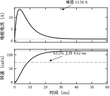
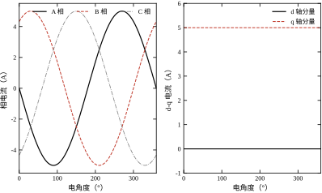
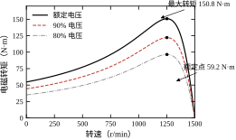
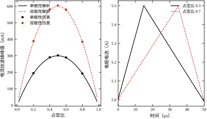
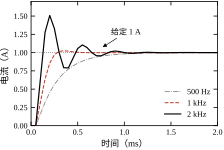

做位置控制的人迟早会遇到一个尴尬的时刻：控制器输出了一串漂亮的数字，示波器上的电流却不是那个样子。给定是一条干净的阶跃，实际电流上叠着锯齿；给定恒定，电流却每隔一个开关周期抖一下；低速时指令很细，电机却一格一格地爬。
这些现象不在控制算法里，而在算法与电机之间的那一层。控制器算出的是电压指令，真正加到绕组上的是开关器件在一串周期里斩出来的方波；绕组是电感，电流只能连续变化；电机转动又产生反电动势，把电压和转速绑在一起。算法与物理之间的这三件事——开关、电感、反电动势——构成了本章的全部内容。
先看一个数量级。本章实验用一台 24 V、电枢电阻 0.7 \Omega、电感 1 mH、K_t=K_e=0.10 的小直流电机，负载 0.05 N·m。加 12 V 阶跃后，稳态电流只有 0.7298 A，而电流峰值达到 13.4981 A，是稳态的 18.5 倍。如果按稳态电流选驱动器，开机瞬间就会过流保护。这个倍数不是控制器造成的，是“电感还没建立起电流、反电动势还没上来”这段物理过程决定的。
再看第二个数量级。同一套参数做电流环，采样 20 kHz，带宽取 4 kHz 时，阶跃响应的末段摆幅达到 512.53%，环路已经发散；带宽取 500 Hz 时超调为 0，但调节时间 0.95 ms。两者相差八倍带宽，得到的不是一个“更快”的环路，而是一个“不能工作”的环路。带宽不是旋钮，它受采样频率、计算延迟和 PWM 更新时刻共同约束。
第三个数量级来自死区。24 V 母线、20 kHz 开关频率、2 \mus 死区，平均电压误差 0.960 V，基波幅值 1.222 V，占相电压峰值 12 V 的 10.19%。低速时相电压峰值本身只有一两伏，这 1.2 V 的误差足以让电流波形畸变、让转速在一转之内忽快忽慢。
三个例子指向同一个结论：电机的控制精度上限，往往由功率级的非理想性决定，而不是由控制律的阶数决定。 本章不讲先进算法，只把这层“非理想但确定”的物理讲清楚，让后续章节的算法有一个可信的被控对象。
从电网到负载，能量经过四级，每一级都有自己的时间尺度，见表 11-1 上方的描述。
第一级是母线。市电整流后得到直流母线，或者由电池直接供电。母线电压 U_{dc} 是一个硬约束：它决定了电机能得到的最高电压，因而决定了最高转速。本章 §11.5.2 会给出定量关系。
第二级是逆变器。三相桥或 H 桥把直流斩成脉冲，用占空比合成出想要的平均电压。开关频率通常 10–20 kHz，周期 50–100 \mus。这一级是“离散”的来源：电压不是连续的，而是每隔一个周期更新一次。
第三级是电机。绕组电感把脉冲电压滤成连续电流，电流产生力矩，力矩推动转子。电气时间常数 L/R 通常是毫秒级，机电时间常数 J/(b+K_tK_e/R) 通常是十毫秒级。两个时间常数相差五到十倍，这决定了电流环和速度环可以分层设计。
第四级是负载。负载力矩可能是恒定的、随转速平方增长的（风机泵类）、或随位置变化的（重力、弹簧）。负载特性决定了稳态工作点，也决定了选型时的力矩余量。
把本章算例的稳态拆开，可以看到能量在哪一级损失。电枢输入功率 12\times0.7298=8.756 W，铜耗 0.7298^2\times0.7=0.373 W，转化为机械功率 8.383 W；机械功率里，负载拿走 0.05\times114.892=5.745 W，黏性阻尼拿走 2\times10^{-4}\times114.892^2=2.64 W。从电到负载的效率是 65.6%，损失主要来自机械阻尼（2.64 W），铜耗只有 0.373 W。 这组数说明：小功率电机里，机械阻尼常常比铜耗大一个量级，不能只盯着电阻。
四级串起来，控制器的分层也就清楚了。电流环跑在开关频率的量级（10–20 kHz），速度环跑在电流环的十分之一（1–2 kHz），位置环再低一个数量级（100–200 Hz）。每一层只“看见”下一层的平均行为，前提是下一层的动态比上一层快得多。 本章的任务就是把这条链上每一级的模型写出来，并说明“平均行为”这个前提在什么条件下成立。
工程上常见的执行电机有三类，它们的模型复杂度、控制方式和适用场合差别很大，见表 11-1。
表 11-1 三类执行电机的对比
| 项目 | 直流有刷电机 | 永磁同步电机 | 感应电机 |
|---|---|---|---|
| 励磁来源 | 永磁体（定子） | 永磁体（转子） | 定子电流感应 |
| 数学模型 | 一阶电气 + 一阶机械 | d-q 两轴耦合 | 五阶，含转差 |
| 控制方式 | 调压 | 磁场定向（FOC） | 变频 + 矢量控制 |
| 低速性能 | 好 | 好（需编码器） | 一般（需测速） |
| 典型场合 | 小功率、低成本 | 伺服、机器人 | 风机、泵、重载 |
直流有刷电机最简单：励磁由永磁体提供，力矩正比于电枢电流，反电动势正比于转速，四个方程就能描述完整。它的缺点是电刷磨损、换向火花，寿命受限。永磁同步电机把永磁体放到转子上，用三相绕组产生旋转磁场，效率高、功率密度大；代价是三相量互相耦合，必须做坐标变换才能像直流电机一样控制。感应电机没有永磁体，转子电流由定子感应产生，结构最结实、成本最低，但模型阶数最高，低速时需要额外的观测手段。
变换器侧主要两类。H 桥用于直流电机、单相负载，四个开关组成两个桥臂，能输出正、负、零三种电压。三相桥用于交流电机，六个开关，每相一个桥臂，能合成六个非零矢量和两个零矢量。两类变换器的工作模式、死区处理和电压利用率都不同，但“用开关的平均值代替瞬时值”这个思路是共通的。
本章的取舍是：直流电机讲透（因为它的四个方程是理解一切电机模型的起点），PMSM 讲到 d-q 模型与力矩公式（因为伺服与机器人几乎都用它），感应电机只讲稳态等效电路与转差（因为它的动态模型属于电机专业课程，控制工程师更需要的是“转矩-转差曲线”这张图）。
三类电机的模型都有各自的“失效工况”，选型时必须知道自己在哪一段工作。
直流有刷电机的模型里没有电刷压降。真实电刷一对压降约 1–2 V 量级，且近似与电流无关。本章算例母线 12 V、反电动势稳态 11.49 V，若串入 1.5 V 电刷压降，可用电压只剩 10.5 V，稳态转速会从 114.892 rad/s 降到约 100 rad/s，差 13%。电压越低、转速越低，这项误差占比越大，12 V 系统里 1.5 V 就是 12.5%，而 300 V 系统里只有 0.5%。所以小电压直驱场合必须把电刷压降写进模型，否则空载转速会一直偏高。
永磁同步电机的 d-q 模型假定反电动势是正弦、电感不随转子位置变化。真实电机若用集中绕组，反电动势接近梯形，含 5、7 次谐波，用正弦模型算出的力矩会在每转出现 6 倍频脉动，幅值可达平均力矩的百分之几。另外，表贴式电机 L_d\approx L_q，磁阻转矩为零；本章参数 L_d=1.2 mH、L_q=1.8 mH，两者差 50%，说明它是内嵌式，才有力矩公式里的 (L_d-L_q)i_di_q 一项。若把内嵌式电机按 L_d=L_q 建模，磁阻转矩整项丢掉，i_d=0 控制看起来仍然能用，但弱磁段的转矩会算少。
感应电机的 T 型等效电路是稳态模型，忽略铁耗、集肤效应与温度对转子电阻的影响。它只在转差较小的线性段准：本章 s=0.03 时转矩 59.208 N·m，与 s 近似成正比；一旦越过临界转差 0.1655，曲线转为下降，电机进入不稳定区，稳态模型给出的“工作点”实际上不可维持。T-s 曲线的右半边只能用来算起动转矩，不能用来设计稳态工作点。 另外转子电阻随温度上升约每摄氏度 0.4%，冷态与热态的起动转矩能差 20% 以上，按冷态整定的起动时间在热态会明显变长。
把这三条放在一起，得到一条贯穿全书的判断：模型不是越精确越好，而是要与工作区间匹配。 直流电机在低压低速段要加电刷压降，PMSM 在谐波明显或凸极比大时要补项，感应电机只在临界转差以内使用稳态模型。超出区间的部分，要么换模型，要么换电机。
拿到一套“电机 + 驱动器”的参数，在写第一行控制代码之前，有五个问题必须能算出数来。它们贯穿全章，也是 §11.6 六组实验的设计依据。
第一，起动电流峰值是多少？ 本章算例是 13.4981 A，出现在 3.28 ms，是稳态电流的 18.5 倍。这个数决定过流保护阈值、决定器件选型、也决定是否需要软起动或电流限幅。
第二，两个时间常数是多少？ 电气时间常数 L/R=1.429 ms，机电时间常数 J/(b+K_tK_e/R)=8.284 ms，比值 0.17。比值小于 1 时，电流环可以先于速度环稳定，分层设计成立；比值接近或大于 1 时，两层必须一起设计。
第三，电流环带宽能取多高？ 采样 20 kHz 时，500 Hz 可用、1 kHz 尚可、2 kHz 超调 50.77%、4 kHz 发散。带宽的上限由采样频率与延迟决定，经验值是采样频率的 1/20 到 1/10，本章会用实测数据把这个区间卡死。
第四，母线电压够不够？ 48 V 母线、\psi_f=0.02 Wb、4 对极，电压极限对应的电角速度是 1385.6 rad/s，机械角速度 346.4 rad/s，约 3307 r/min。超过这个转速，再大的电流指令也换不来转矩，必须弱磁。
第五，死区带来的电压误差占多少？ 24 V 母线时是 0.960 V，占相电压峰值的 10.19%；48 V 时翻倍到 1.920 V，占比不变；300 V 时是 12.000 V，占比仍是 10.19%。占比只由死区时间与开关频率的乘积决定，与母线电压无关，这一点常被误判。
五个问题分别对应电气、机械、离散、电压、非理想性五个层面。能把它们算出数，才算真正“拿到”了这套驱动系统。
本章的核心可以压成一句话：电机是“电压—电流—力矩—转速”的四级积分链，电力电子是这条链入口处的采样保持器，控制的难点在于这两件事的时间尺度只差一个数量级。
这句话展开成三句。电压到电流是电感的一阶惯性，时间常数 L/R；电流到力矩是比例，系数 K_t；力矩到转速是惯量的一阶积分，时间常数 J/b 被反电动势修正为 J/(b+K_tK_e/R)。电力电子把连续的电压指令变成周期性的方波，等效于一个零阶保持器加一个纯延迟。两个时间尺度接近，所以“先设计电流环、再设计速度环”的经典分层只在特定参数下成立。
全章的路线是：§11.2 写方程（直流、PMSM、感应、PWM），§11.3 做推导（力矩来源、传递函数、功率不变性、纹波、死区、调制利用率、损耗），§11.4 讲离散（精确离散、离散 PI、延迟预算、平均模型与开关模型的分工），§11.5 谈工程（选型、母线、带宽、低速、边界），§11.6 用六组实验验证，§11.7 收束成清单。
直觉一：电机是一个“电压进、转速出”的比例环节。 这个直觉在稳态附近成立，在起动和制动时不成立。12 V 阶跃时，若按比例环节估算，电流应当是 12/0.7=17.14 A，实际峰值 13.4981 A，因为反电动势已经削掉一部分；转速也不是立刻到位，而是按 8.284 ms 的时间常数爬升。把电机当比例环节，会在起动电流、制动距离、抗扰恢复时间上系统性地低估。
直觉二：电流环带宽越高，响应越快。 实测结果正好相反：带宽从 500 Hz 提到 2 kHz，上升时间从 0.500 ms 降到 0.050 ms，但超调从 0 涨到 50.77%，调节时间从 0.95 ms 退化到 0.90 ms 再退化到 8 ms（4 kHz 时已发散）。“快”是指到达并停住，不是指第一次冲过目标。 带宽的上限由延迟的相位损失决定，超过它，环路只是在振荡。
直觉三：平均模型够用，不必管开关细节。 设计电流环时确实可以用平均模型，但有三件事平均模型看不见：纹波峰值（决定电感饱和与采样信噪比）、死区误差（决定低速波形畸变）、开关损耗（决定温升与降额）。本章实验三测得 5 A 平均电流下纹波峰峰值 600 mA（双极性、D=0.5），峰值电流就是 5.3 A；实验六测得死区误差占相电压峰值 10.19%。这两个数都不在平均模型里，却都必须在选型时留出余量。
电机方程里的符号错误，比任何数值误差都更难查。同一个转矩，按电动机惯例写是正的，按发电机惯例写就是负的；同一相电流，从绕组流入和流出差一个负号。在写第一个方程之前，必须把三个正方向钉死。
第一个是电流正方向：规定从驱动器流向电机、从绕组正端流入为负、流出为正（或反之，但全章统一）。本章采用“流入为正”，即电流从逆变器桥臂中点流入绕组时 i>0。
第二个是电压正方向：与电流关联参考方向一致，绕组端电压减去反电动势等于电阻压降加电感压降。
第三个是转矩与转速正方向：转矩正方向与转速正方向相同，即“正转矩产生正加速度”。按这个约定，电动机运行时 T_e 与 \omega 同号，机械功率 T_e\omega>0，能量从电到机；发电制动时两者异号，功率为负。
约定定好之后，“电动机惯例”就只有一个含义：所有方程都写成“输入量减反电动势、再除以阻抗”的形式，制动时电流自然取负值，不需要另写一套方程。 这一点在 §11.6 的仿真里很重要——正阶跃和负阶跃用同一份代码，只是 u 的符号不同。
直流有刷电机的全部动态由四个方程描述。第一个是电枢回路：
u=R\,i+L\frac{\mathrm{d}i}{\mathrm{d}t}+e \tag{11-1}
其中 u 是电枢端电压，R 是电枢电阻，L 是电枢电感，e 是反电动势。这个方程说的是：端电压一部分降在电阻上，一部分用来克服电感，剩下的与反电动势平衡。
第二个是反电动势与转速的关系：
e=K_e\,\omega \tag{11-2}
K_e 是反电动势常数，单位 V·s/rad。永磁体磁通恒定时，反电动势严格正比于转速。
第三个是电磁转矩与电流的关系：
T_e=K_t\,i \tag{11-3}
K_t 是转矩常数，单位 N·m/A。在国际单位制下，K_t 与 K_e 的数值相等（都等于磁链），但单位不同，这一点常被忽略。
第四个是机械方程：
J\frac{\mathrm{d}\omega}{\mathrm{d}t}=T_e-T_L-b\,\omega \tag{11-4}
J 是转动惯量，T_L 是负载转矩，b 是黏性阻尼系数。
四个方程里，(11-1) 与 (11-2) 构成电气子系统，(11-3) 与 (11-4) 构成机械子系统，i 与 \omega 是两者之间的耦合变量。稳态时导数为零，可以解出
\omega_{ss}=\frac{K_tU/R-T_L}{b+K_tK_e/R},\qquad i_{ss}=\frac{U-K_e\omega_{ss}}{R} \tag{11-5}
代入本章参数（U=12 V，R=0.7\ \Omega，K_t=K_e=0.10，T_L=0.05 N·m，b=2\times10^{-4} N·m·s/rad），得 \omega_{ss}=114.892 rad/s，i_{ss}=0.7298 A。手算与仿真一致到小数点后三位，说明四个方程的符号没有写错。
图 11-1 是这四个方程的仿真结果。上图是电枢电流：从零开始上升，在 3.28 ms 达到峰值 13.4981 A，随后随反电动势建立而回落，稳态 0.7298 A。下图是转速：单调上升，63.2% 上升时间 8.620 ms；虚线是不含电感的一阶近似，两者在起动初期偏差最大，达 12.798 rad/s，占稳态转速的 11.14%。

峰值出现在 3.28 ms 而不是 t=0，是电感与反电动势竞争的结果：电感让电流不能突变，反电动势随转速上升又把电流往下压。这两个效应的时间常数相差 5.8 倍（1.429 ms 对 8.284 ms），峰值就落在两者之间。
这个竞争过程可以用一个“冻结转速”的估算看清：假设转速在这段时间内还没来得及上升，电流只按 L/R 上升，即 i(t)=(U/R)\left(1-\mathrm{e}^{-Rt/L}\right)。
代入 t=3.28 ms，得 17.143\times(1-\mathrm{e}^{-2.295})=15.417 A。实际峰值 13.4981 A，比这个估算低 12.4%。差额来自这段时间内已经建立的反电动势：峰值时刻由 K_e\omega=U-Ri 反推得 2.55 V，对应转速 25.5 rad/s。先算“冻结转速”的上界，再用反电动势修正，是不仿真时估峰值的实用办法。
三相电机的困难在于三个绕组互相耦合：A 相的电流会在 B、C 相感应出电压，转矩又同时依赖三相电流。直接在三相坐标里设计控制器，等于面对三个互相缠绕的变量。坐标变换的目的是把这团缠绕解开。
第一步是 Clarke 变换，把三相静止坐标 (a,b,c) 变到两相静止坐标 (\alpha,\beta)。采用幅值不变约定：
\begin{bmatrix}i_\alpha\\ i_\beta\end{bmatrix}=\frac{2}{3}\begin{bmatrix}1&-\frac{1}{2}&-\frac{1}{2}\\ 0&\frac{\sqrt3}{2}&-\frac{\sqrt3}{2}\end{bmatrix}\begin{bmatrix}i_a\\ i_b\\ i_c\end{bmatrix} \tag{11-6}
前面的 2/3 是幅值不变约定的标志。若用功率不变约定，系数是 \sqrt{2/3}，两种约定只在缩放上不同，但混用会让力矩公式差一个常数。本章统一用幅值不变约定，即三相电流幅值为 I_m 时，i_\alpha 的幅值也是 I_m。
三相无中线时 i_a+i_b+i_c=0，所以 Clarke 变换只用两个电流，第三个是冗余的：
i_a+i_b+i_c=0 \tag{11-7}
第二步是 Park 变换，把静止的 (\alpha,\beta) 变到随转子旋转的 (d,q)：
\begin{bmatrix}i_d\\ i_q\end{bmatrix}=\begin{bmatrix}\cos\theta_e&\sin\theta_e\\ -\sin\theta_e&\cos\theta_e\end{bmatrix}\begin{bmatrix}i_\alpha\\ i_\beta\end{bmatrix} \tag{11-8}
\theta_e 是转子电角度，与机械角度的关系是 \theta_e=p\,\theta_m，p 是极对数。反变换为
\begin{bmatrix}i_\alpha\\ i_\beta\end{bmatrix}=\begin{bmatrix}\cos\theta_e&-\sin\theta_e\\ \sin\theta_e&\cos\theta_e\end{bmatrix}\begin{bmatrix}i_d\\ i_q\end{bmatrix} \tag{11-9}
变换的几何意义是：站在转子上看，三相正弦电流变成了两个直流量。i_d 沿转子磁链方向，i_q 垂直于它。控制问题从“跟踪三个正弦”变成“调节两个常数”，这是磁场定向控制能够像直流电机一样工作的根本原因。
图 11-2 是本章实验四的波形：三相电流是三条相位互差 120^\circ 的正弦，变换后 i_q 稳定在 5.000 A，i_d 的均值是 -7.298\times10^{-19} A，即机器精度下的零。

i_d 的均值不是“接近零”而是“零到机器精度”，这不是巧合，而是变换正确的判据。若把变换矩阵的符号写错，i_d 会变成 i_q 的镜像，均值同样不为零，但波形会明显偏移；若把 2/3 写成 \sqrt{2/3}，i_q 的均值会偏离 5.000 A 约 22.5%。先用一个已知的三相正弦校验变换，再谈控制，是省时间的做法。
变换不只适用于电流。电压、磁链在同一组坐标下服从同一对矩阵，因为它们是同一个空间矢量的三个分量。把 [i_a,i_b,i_c]^{\mathrm{T}} 换成 [i_d,i_q]^{\mathrm{T}} 之后，电压与磁链也一并变换，控制器里只保留 d-q 两个通道，三相的耦合被“打包”进了 \omega_e 的交叉项。
Park 矩阵在幅值不变约定下是正交矩阵（差一个尺度），逆矩阵等于转置，这是 (11-9) 可以直接写出来的原因。Clarke 矩阵不是方阵，因为三相里有一相冗余；加上零序分量 i_0=(i_a+i_b+i_c)/3 才能构成可逆的三阶变换。无中线时 i_0=0，所以只取两行。
\theta_e 的来源必须与实际转子位置对齐。编码器给出的是机械角，乘极对数得到电角度，但编码器零位与转子磁链方向之间有一个固定的安装偏差 \theta_0。若 \theta_0 不为零，i_d 与 i_q 会互相串扰：本应全部落在 q 轴的电流，有一部分落到 d 轴，产生额外的铜耗与转矩损失。标定的办法是让电机空载、给定 i_d=0、i_q 为常数，缓慢转动，调 \theta_0 使 i_d 的均值过零。这一步不做，后面的电流环调得再好，效率也会差几个百分点。
给一个数值例子，把三步变换走一遍。取 i_a=5 A、i_b=i_c=-2.5 A，这是一个幅值 5 A、位于 a 轴方向的电流矢量。Clarke 变换得 i_\alpha=\frac23(5+1.25+1.25)=5 A，i_\beta=\frac23(0-\frac{\sqrt3}{2}\times2.5+\frac{\sqrt3}{2}\times2.5)=0。再取 \theta_e=30^\circ，Park 变换得 i_d=5\cos30^\circ=4.330 A，i_q=-5\sin30^\circ=-2.5 A。
校验一下：i_d^2+i_q^2=18.75+6.25=25，等于 i_\alpha^2+i_\beta^2=25。Park 是旋转，不改变矢量模长；模长变了，一定是矩阵系数或角度错了。 这个校验比逐点对波形快得多，适合放在代码的自检里。
i_q 为负值也值得注意。它说明在这个角度下，电流矢量超前 q 轴，按本章的约定产生负转矩。若控制器期望正转矩却得到负值，先查 \theta_e 的零位与旋转方向，而不是先去调 PI。
永磁同步电机在 d-q 坐标下的电压方程是
u_d=R_si_d+L_d\frac{\mathrm{d}i_d}{\mathrm{d}t}-\omega_eL_qi_q \tag{11-10}
u_q=R_si_q+L_q\frac{\mathrm{d}i_q}{\mathrm{d}t}+\omega_e\left(L_di_d+\psi_f\right) \tag{11-11}
其中 R_s 是定子电阻，L_d、L_q 是直轴与交轴电感，\psi_f 是永磁体磁链，\omega_e=p\,\omega_m 是电角速度。(11-10) 与 (11-11) 与直流电机的 (11-1) 结构相同，只是多了两个耦合项：\omega_eL_qi_q 是交轴电流在直轴上产生的旋转反电动势，\omega_e(L_di_d+\psi_f) 是直轴磁链（含永磁体）在交轴上产生的反电动势。
电磁转矩为
T_e=\frac{3}{2}p\left[\psi_fi_q+(L_d-L_q)i_di_q\right] \tag{11-12}
方括号里第一项是永磁转矩，第二项是磁阻转矩。表贴式电机 L_d\approx L_q，磁阻转矩为零，转矩正比于 i_q；内置式电机 L_q>L_d，令 i_d<0 可以额外得到一部分转矩，这就是“最大转矩每安培”控制的由来。
机械方程与直流电机相同：
J\frac{\mathrm{d}\omega_m}{\mathrm{d}t}=T_e-T_L-b\,\omega_m \tag{11-13}
本章实验四取 R_s=0.5\ \Omega，L_d=1.2 mH，L_q=1.8 mH，\psi_f=0.02 Wb，p=4，i_d=0，i_q=5 A，\omega_m=100 rad/s。代入得 \omega_e=400 rad/s，u_d=-3.6000 V，u_q=10.5000 V，T_e=0.6000 N·m。四个数都能手算复核：u_d=-400\times1.8\times10^{-3}\times5=-3.6；u_q=0.5\times5+400\times0.02=10.5；T_e=1.5\times4\times0.02\times5=0.6。
稳态时导数为零，(11-10) 与 (11-11) 退化成代数方程 u_d=R_si_d-\omega_eL_qi_q 与 u_q=R_si_q+\omega_e\left(L_di_d+\psi_f\right)。
这两个式子说明 d 轴与 q 轴的“主要矛盾”不同：d 轴电压主要由 q 轴电流的耦合项决定，q 轴电压主要由永磁磁链决定。低速时 R_si_q 占主导，高速时 \omega_e\psi_f 占主导。两者相等的转折点满足 \omega_e=R_si_q/\psi_f，本章参数下是 125 rad/s 电角速度，即机械 31.25 rad/s、约 298 r/min。超过这个转速，反电动势就是 q 轴电压的主要成分，电压裕度开始吃紧。
磁阻转矩的值也值得算一次。取 i_d=-2 A、i_q=5 A，磁阻项为 1.5\times4\times(1.2-1.8)\times10^{-3}\times(-2)\times5=0.036 N·m，是永磁转矩 0.6 N·m 的 6%。但电流幅值从 5 A 增到 \sqrt{29}=5.385 A，增加 7.7%。用 7.7% 的电流换 6% 的转矩，在这个工作点并不划算；最大转矩每安培的最优点要按 L_d、L_q 与 i_q 联立求，不是“加一点负 i_d 总是好的”。
从控制的角度看，(11-10) 与 (11-11) 是线性方程，但系数含 \omega_e，所以它是一个“参数随转速变化”的线性系统。转速升高，耦合项 \omega_eL_q 与 \omega_eL_d 成比例增大，两个轴之间的相互干扰越来越强。若只用一个固定的 PI，高速时 d 轴的扰动会串到 q 轴，q 轴的扰动又会串回 d 轴，表现为电流跟踪变慢、相位滞后。
解决办法是前馈解耦：在 PI 输出上叠加 \hat u_d=-\omega_eL_qi_q 与 \hat u_q=\omega_e(L_di_d+\psi_f)，把耦合项抵消。补偿后，两个轴各自退化成一个 RL 回路，u_d=R_si_d+L_d\mathrm{d}i_d/\mathrm{d}t、u_q=R_si_q+L_q\mathrm{d}i_q/\mathrm{d}t，可以用同一套 K_p=L\omega_c、K_i=R\omega_c 整定。解耦不是“可选的优化”，而是高速下电流环能否保持带宽的前提。
感应电机没有永磁体，转子电流靠定子磁场感应产生，因此转速必须低于同步转速，否则没有相对运动、没有感应、没有转矩。同步转速为
n_s=\frac{60f}{p} \tag{11-14}
f 是定子频率，p 是极对数。转差定义为
s=\frac{n_s-n}{n_s} \tag{11-15}
s=0 时转子与磁场同步，转矩为零；s=1 时转子堵转。正常运行在 s=0.01–0.05 的小转差区。
稳态分析用 T 型等效电路：定子电阻 R_s 与漏抗 X_{ls} 串联，励磁支路 X_m 与转子支路并联，转子支路是 R_r/s 与漏抗 X_{lr} 串联。从定子端看进去的阻抗为
Z=R_s+\mathrm{j}X_{ls}+\frac{\mathrm{j}X_m\left(\frac{R_r}{s}+\mathrm{j}X_{lr}\right)}{\frac{R_r}{s}+\mathrm{j}\left(X_m+X_{lr}\right)} \tag{11-16}
定子电流 I_s=U_s/Z，气隙功率等于转子铜耗除以转差，转矩等于气隙功率除以同步机械角速度：
T_e=\frac{3\left|I_r'\right|^2R_r/s}{\omega_s},\qquad \omega_s=\frac{2\pi f}{p} \tag{11-17}
本章实验五取 R_s=0.5\ \Omega，R_r=0.4\ \Omega，X_{ls}=X_{lr}=1.2\ \Omega，X_m=40\ \Omega，U_s=220 V，f=50 Hz，p=2。同步转速 1500 r/min。数值扫转差得到：最大转矩 150.808 N·m，临界转差 0.1655，对应转速 1251.8 r/min；起动转矩 54.623 N·m，是最大转矩的 0.362 倍；s=0.03 时转矩 59.208 N·m，过载倍数 2.55。
图 11-3 把这组数据画成转矩-转差曲线，并叠加了母线电压降到 90% 与 80% 的两条曲线。三条曲线的形状相同，只是幅值按电压平方缩放：90% 电压的最大转矩 122.155 N·m，80% 电压 96.517 N·m，与 (0.9)^2、(0.8)^2 的比值都是 1.0000。

曲线有三个特征点：起动点 s=1、最大转矩点 s=0.1655、额定工作点 s=0.03。最大转矩与电压平方成正比，临界转差与电压无关——这是感应电机最重要的两条 scaling 关系，也是低压时“带不动负载”的根本原因：不是电流不够，是最大转矩掉到了负载转矩以下。
曲线的两段性质完全不同。s<s_m 是稳定段：负载增大，转速略降、转差略增、转矩增大，能自动回到平衡；s>s_m 是不稳定段：负载增大，转速下降、转差增大，转矩反而减小，电机迅速堵转。临界转差 0.1655 就是稳定与不稳定的分界，运行点必须留在左侧。
起动转矩只有最大转矩的 0.362 倍，原因在转子阻抗角。s=1 时转子支路的电阻是 R_r=0.4\ \Omega，漏抗是 X_{lr}=1.2\ \Omega，阻抗角 \arctan(1.2/0.4)=71.6^\circ，功率因数只有 0.316，大部分转子电流是无功的；s=0.03 时 R_r/s=13.33\ \Omega，阻抗角降到 5.14^\circ，功率因数 0.996，电流几乎全部用来产生转矩。同一个电流，起动时只有三成做功，额定点几乎全部做功，这就是 0.362 的来源。
逆变器的输出不是一个连续电压，而是一串幅值为 U_{dc} 的脉冲。描述这串脉冲只需两个量：开关周期 T_s 与占空比 D。
D=\frac{t_{on}}{T_s} \tag{11-18}
一个周期内的平均电压为
\langle u\rangle=D\,U_{dc} \tag{11-19}
对全桥（H 桥）双极性调制，输出在 +U_{dc} 与 -U_{dc} 之间切换，平均电压是 \langle u\rangle=(2D-1)U_{dc}。这两个式子是所有平均模型的基础：控制器算出的连续电压，最终以占空比的形式被实现，中间隔着一个采样保持。
开关器件的选择决定 T_s 能取多小、效率能有多高。三类常用器件的对比如表 11-2。
表 11-2 常用开关器件的对比
| 项目 | 功率 MOSFET | IGBT | SiC MOSFET |
|---|---|---|---|
| 电压范围 | 20–200 V | 600–1700 V | 600–1700 V |
| 电流范围 | 几安到几百安 | 几十安到上千安 | 几十安到几百安 |
| 开关频率 | 20–200 kHz | 5–20 kHz | 20–100 kHz |
| 导通特性 | 电阻型，I^2R | 饱和压降型 | 电阻型，R_{ds,on} 小 |
| 典型场合 | 低压伺服、电池供电 | 工业变频、大功率 | 高效、高功率密度 |
MOSFET 是电阻型导通，低压小电流时损耗低；IGBT 有固定的饱和压降，高压大电流时更有优势，但开关速度慢；SiC MOSFET 兼具高耐压与高开关频率，代价是成本与驱动难度。选器件本质上是在“开关频率”与“单次开关损耗”之间做乘法，这一点在 §11.3.7 会给出定量式。
用数据手册算损耗时要注意温度。MOSFET 的 R_{ds,on} 随结温上升而增大，从 25 ℃ 到 150 ℃ 通常增大到 1.5–2 倍，若按常温值算导通损耗，会把最坏工况低估一半；IGBT 的饱和压降温度系数在小电流时为负、大电流时为正，多管并联时前者容易抢电流。开关频率的上限不是由控制算法决定的，而是由器件与散热共同决定的。 想把 20 kHz 提到 40 kHz，先算清开关损耗翻倍后结温是否还在降额线内，再谈纹波与带宽的收益。
本章用到的符号汇总于表 11-3。同一符号在全章只表达一个含义，与后续章节冲突时以本书《术语与符号表》为准。
表 11-3 本章符号与单位
| 符号 | 含义 | 单位 |
|---|---|---|
| u | 绕组端电压 | V |
| i | 绕组电流 | A |
| R | 绕组电阻 | \Omega |
| L | 绕组电感 | H |
| e | 反电动势 | V |
| K_e | 反电动势常数 | V·s/rad |
| K_t | 转矩常数 | N·m/A |
| T_e | 电磁转矩 | N·m |
| T_L | 负载转矩 | N·m |
| J | 转动惯量 | kg·m² |
| b | 黏性阻尼 | N·m·s/rad |
| \omega_m | 机械角速度 | rad/s |
| \omega_e | 电角速度 | rad/s |
| p | 极对数 | — |
| \psi_f | 永磁体磁链 | Wb |
| s | 转差 | — |
| U_{dc} | 直流母线电压 | V |
| D | 占空比 | — |
| f_s | 开关频率 | Hz |
| T_s | 开关周期 | s |
上一节把 T_e=K_ti 当作已知，但为什么电流会产生力矩、为什么有的电机还有磁阻转矩、为什么感应电机必须有转差，这些问题的答案在能量里。
磁场储能对电感电流的积分是 W=\int i\,\mathrm{d}\psi；更方便的是磁共能，定义为对磁链的积分：
W_f'=\int_0^{i}\psi(i')\,\mathrm{d}i' \tag{11-20}
在电流恒定、只有几何位置变化的条件下，电磁转矩等于磁共能对机械角度的偏导：
T_e=\left.\frac{\partial W_f'}{\partial\theta_m}\right|_{i=\mathrm{const}} \tag{11-21}
对线性磁路 \psi=L(\theta_m)i，磁共能是 \frac12L(\theta_m)i^2，于是
T_e=\frac12i^2\frac{\mathrm{d}L}{\mathrm{d}\theta_m} \tag{11-22}
这个式子解释了三件事。第一，力矩来自电感随位置的变化，而不是来自电流本身；电流只是“激励”，角度变化才是“做功的通道”。第二，若电感不随位置变化（例如表贴式永磁电机的定子自感），则这一项为零，力矩只能来自永磁体与电流的相互作用。第三，两台电机若电感随角度的变化率相同，力矩就正比于电流平方，这就是磁阻电机与磁阻转矩的来源。
PMSM 的 (11-12) 正是 (11-22) 的具体化：转子旋转时，d 轴与 q 轴的电感不同，磁共能对角度求导得到 (L_d-L_q)i_di_q 这一项。感应电机的转子没有永磁体，转子电流由转差感应，转差为零则转子电流为零，力矩也为零——这从 (11-22) 看是“电感变化率存在但没有电流”，从等效电路看是“转子支路阻抗无穷大”。
把 (11-1)–(11-4) 做拉普拉斯变换，令初值为零：
(Ls+R)I(s)=U(s)-K_e\Omega(s),\qquad (Js+b)\Omega(s)=K_tI(s)-T_L(s) \tag{11-23}
消去 I(s)，得到电压到转速的传递函数
\frac{\Omega(s)}{U(s)}=\frac{K_t}{(Ls+R)(Js+b)+K_tK_e} \tag{11-24}
分母展开后是 LJs^2+(Lb+RJ)s+(Rb+K_tK_e)，写成标准二阶形式 \omega_n^2 与 2\zeta\omega_n：
\omega_n=\sqrt{\frac{Rb+K_tK_e}{LJ}},\qquad \zeta=\frac{Lb+RJ}{2\sqrt{LJ\left(Rb+K_tK_e\right)}} \tag{11-25}
代入本章参数（L=1 mH，R=0.7\ \Omega，J=1.2\times10^{-4} kg·m²，b=2\times10^{-4}，K_tK_e=0.01），得 \omega_n=290.7 rad/s，\zeta=1.21。阻尼比大于 1，系统是过阻尼的，阶跃响应不会超调；这与 §11.6.2 的实验结果一致——转速单调上升，没有振荡。
传递函数的两个稳态量可以直接读出。直流增益是 K_t/(Rb+K_tK_e)=0.1/0.01014=9.862 rad/s/V，即每伏电压对应 9.862 rad/s 的空载转速；负载灵敏度是 R/(Rb+K_tK_e)=69.03 rad/s/(N·m)，即每牛米负载压低 69.03 rad/s。12 V 空载 118.34 rad/s，减去 0.05 N·m 的 3.45 rad/s，得 114.89 rad/s，与仿真的 114.892 一致。这两个数比 Bode 图更实用：选电机时先看增益够不够，再看负载压降大不大。
分母的两个根是 -154.4 与 -547.3 rad/s，对应时间常数 6.48 ms 与 1.83 ms。慢极点的时间常数比 \tau_m=8.284 ms 小 22%，但上升时间只差 4.1%——上升时间由两个极点共同决定，对慢极点并不敏感。“两个时间常数”是量级估算，不是精确公式。 只有当 \tau_e/\tau_m<0.01 时，慢极点才会与 \tau_m 吻合到 1% 以内。
过阻尼系统的两个极点可以用两个时间常数做量级估算：
\tau_e=\frac{L}{R},\qquad \tau_m=\frac{J}{b+K_tK_e/R} \tag{11-26}
前者是电气时间常数，后者是机电时间常数。本章参数下 \tau_e=1.429 ms，\tau_m=8.284 ms，比值 0.17。比值的物理含义是“电流建立得快不快于转速建立”：比值远小于 1，电流环可以先稳定，再设计速度环；比值接近 1，两个环的带宽必须拉开但又拉不开，只能一起设计。
上升时间与调节时间也值得区分。两个极点 -154.4 与 -547.3 rad/s 中，慢极点主导尾部，按 4/154.4 估算，2% 调节时间约 25.9 ms；而 63.2% 上升时间只有 8.620 ms。两者相差三倍，“看起来到位”与“真正到位”不是一回事。 速度环若按上升时间定带宽，会把稳定时间估短；按调节时间定，才留得住负载扰动后的恢复余量。
一个容易混淆的点是 \tau_m 的分母。它不是 b，而是 b+K_tK_e/R。多出来的 K_tK_e/R 是反电动势的“电气阻尼”：转速升高，反电动势升高，电流下降，力矩下降。这部分阻尼在电气上产生、在机械上表现，数值上往往远大于黏性阻尼（本章 0.014286 对 0.0002，相差 71 倍）。忽略它会把机电时间常数高估 70 倍。
三相瞬时功率是
p=u_ai_a+u_bi_b+u_ci_c \tag{11-27}
把 (11-6)、(11-9) 代入并利用 i_a+i_b+i_c=0，得到
p=\frac32\left(u_\alpha i_\alpha+u_\beta i_\beta\right)=\frac32\left(u_di_d+u_qi_q\right) \tag{11-28}
系数 3/2 是幅值不变约定的必然结果。直观地看：幅值不变约定让每相电流的峰值与 i_\alpha 的峰值相同，但三相共同做功，功率自然是两相坐标的 3/2 倍。若改用功率不变约定，系数变成 1，但电流幅值会被缩放 \sqrt{3/2}，力矩公式也要跟着改。两套约定不能混用，混用的典型症状是力矩差 1.5 倍或 2/3 倍。
本章实验四专门校验这一点：u_d=-3.6000 V，u_q=10.5000 V，i_d 均值 -7.298\times10^{-19} A，i_q 均值 5.000 A。按 (11-28) 算得 78.7500 W；同时用三相瞬时功率逐点平均，也得到 78.7500 W，相对偏差 0.00\times10^{0}。再把功率拆开：机械功率 T_e\omega_m=0.6000\times100=60.0000 W，铜耗 \frac32R_s(i_d^2+i_q^2)=18.7500 W，两者之和 78.7500 W，残差 0.00\times10^{0} W。
功率平衡残差为零，比“波形看起来对”强得多。 它同时验证了变换矩阵、3/2 系数、力矩公式和铜耗公式；其中任何一个写错，残差都不会是零。
开关频率足够高时，一个周期内的电流变化很小，可以对 (11-1) 在一个周期内取平均：
L\frac{\mathrm{d}\langle i\rangle}{\mathrm{d}t}=\langle u\rangle-R\langle i\rangle-e \tag{11-29}
这就是平均模型：它把开关过程抹平，只保留占空比决定的平均电压。设计电流环、速度环时用平均模型，因为环路带宽远低于开关频率，看不见纹波。
但平均模型看不见纹波，而纹波必须单独算。以单极性 H 桥为例，输出在 0 与 U_{dc} 之间切换，导通期间电流上升斜率约 (U_{dc}-\langle u\rangle)/L，关断期间下降斜率约 -\langle u\rangle/L，两者持续时间分别是 DT_s 与 (1-D)T_s。峰峰值出现在两段斜率与时间乘积相等处：
\Delta i_{pp}=\frac{U_{dc}D(1-D)}{Lf_s} \tag{11-30}
双极性调制时输出在 +U_{dc} 与 -U_{dc} 之间切换，电压摆幅是 2U_{dc}，纹波恰好翻倍。
代入本章参数（U_{dc}=24 V，L=1 mH，f_s=20 kHz）：D=0.5 时单极性 300 mA、双极性 600 mA；D=0.2 或 0.8 时单极性 192 mA、双极性 384 mA。纹波随占空比呈抛物线，在 0.5 处最大，两端对称。图 11-4 左边是这条抛物线与五个仿真点，右边是 D=0.2 与 D=0.5 两个周期的时域波形。

仿真点系统性地比解析值高 0.3%–1.3%，原因在 §11.6.4 会展开：解析式假设电流严格线性，真实电流是指数段。这个偏差不大，但它提醒我们，(11-30) 是“线性化”的产物，占空比越偏离 0.5、电感越小、频率越低，偏差越大。
纹波公式也可以反用来选电感。若要求纹波不超过平均电流的 20%，5 A 对应 1 A；D=0.5 是最坏情况，代入 (11-30) 得 L\ge U_{dc}/(4f_s\Delta i)=24/(4\times20000\times1)=300\ \muH。本章取 1 mH，是下限的 3.3 倍，纹波相应降到 300 mA，占平均值的 6%。电感选得越大，纹波越小，但体积、成本与电流响应速度都会变差；300 \muH 是“刚好够用”，1 mH 是“留了三倍余量”，工程上通常落在两者之间。
除了纹波，电感还要校核饱和电流。峰值电流是平均值加半个纹波，5 A 平均、600 mA 纹波时是 5.3 A；电感的饱和电流必须大于这个值，并留出至少 20% 的裕量。纹波算得再准，电感一饱和，电感量掉到十分之一，纹波会瞬间放大，电流环也跟着失稳。
纹波的有效值也值得算。三角波的 RMS 是峰峰值的 1/(2\sqrt3)=0.2887。600 mA 峰峰值对应 173.2 mA RMS，占 5 A 的 3.46%，铜耗只增加 0.12%；但平均电流降到 0.5 A 时，同样的纹波有效值占 34.6%，铜耗增加 12%，平均电流再降到 0.3 A 以下就进入断续模式，平均模型失效。纹波是否可接受，要看它相对平均电流的比例，而不是绝对值。
H 桥有四个开关，组成两个桥臂。按电压与电流的符号组合，工作状态分四种，见表 11-4。
表 11-4 H 桥的四种工作模式
| 模式 | 电压 | 电流 | 开关状态 | 能量流向 |
|---|---|---|---|---|
| 正向电动 | u>0 | i>0 | Q1、Q4 导通 | 母线到电机 |
| 正向制动 | u<0 | i>0 | Q2、Q3 导通 | 电机到母线 |
| 反向电动 | u<0 | i<0 | Q2、Q3 导通 | 母线到电机 |
| 反向制动 | u>0 | i<0 | Q1、Q4 导通 | 电机到母线 |
四种模式的开关组合其实只有两种：Q1、Q4 同时导通，或 Q2、Q3 同时导通。区别在于电流方向：电流与电压同向是电动，反向是制动（回馈）。“制动”不是一个额外的电路状态，而是同一开关状态下电流反向的自然结果。 这也是为什么 H 桥能四象限运行，而半桥只能两象限。
制动时能量往哪里去，是一个常被忽略的问题。本章转子在 114.892 rad/s 时的动能是 \frac12J\omega^2=0.792 J；1000 \muF 的母线电容在 24 V 时只储存 0.288 J。若这 0.792 J 全部回灌且没有泄放通道，母线电压会升到 \sqrt{24^2+2\times0.792/10^{-3}}=46.5 V，接近翻倍。频繁启停的系统，母线电容与制动电阻是按“一次制动回灌多少能量”选的，不是按稳态功率选的。
工程上有三种处理：加制动电阻与斩波器，把多余能量烧掉；用可回馈的电网侧变流器，把能量送回电网；靠电池或超级电容吸收。三种方案的体积、成本、效率差别很大，但共同点是——控制器必须知道母线电压的上限，否则制动指令发出去了，硬件先过压保护。
实际电路里，同一桥臂的上下两个开关不能同时导通，否则母线直接短路。为此在关断一个、开通另一个之间插入死区时间 t_d，通常 1–3 \mus。死区期间两个开关都关断，电流只能通过二极管续流，此时桥臂中点电压由电流方向决定，而不是由指令决定。一个开关周期内平均下来的电压误差是
\Delta u=-U_{dc}\,t_d\,f_s\,\mathrm{sign}(i) \tag{11-31}
这个式子的形式值得注意：误差正比于 U_{dc}、t_d、f_s 三者的乘积，且只与电流方向有关，与电流大小无关。t_d=2\ \mus、f_s=20 kHz 时，t_df_s=0.04，24 V 母线的平均误差是 0.960 V，48 V 是 1.920 V，300 V 是 12.000 V。误差的绝对值随母线升高，但占母线电压的比例恒为 4%。
死区的时序细节决定了这 4% 为什么躲不掉。以 Q1 关断、Q2 开通为例：先关 Q1，等待 t_d，再开 Q2。t_d 内两个开关都关断，若电流为正，它经 Q2 的反并二极管续流，桥臂中点被钳到负母线；若电流为负，它经 Q1 的反并二极管续流，中点被钳到正母线。t_d 内的电压完全由电流方向决定，控制器失去了控制权。 一个周期损失 t_d，平均电压就少 U_{dc}t_df_s。
实际死区还要修正器件延时。开通延时 t_{on} 与关断延时 t_{off} 通常不相等，真正需要的死区是 (t_{off}-t_{on}) 再加裕量，而不是手册上的 t_d。温度升高时 t_{off} 变长，若死区按常温设定，高温下可能不够；反过来，死区设得过大，低速畸变更严重。死区时间是一个需要按最坏温度校核的量，不是拍一个 2 \mus 就完事。
误差的基波幅值比平均值大，因为方波误差的基波系数是 4/\pi。24 V 时基波幅值 1.222 V，占相电压峰值 12 V 的 10.19%；48 V 与 300 V 的占比同样是 10.19%。低速时相电压峰值本身很小，这 10.19% 就是波形畸变的主要来源，§11.5.4 会给出补偿办法。
同样的母线电压，不同的调制方式能输出的最大相电压不同。三种常见方式的对比见表 11-5。
表 11-5 三种调制方式的电压利用率
| 方式 | 最大相电压峰值 | 相对 SPWM | 特点 |
|---|---|---|---|
| SPWM | U_{dc}/2 | 1.000 | 实现简单，线性度好 |
| SVPWM | U_{dc}/\sqrt3 | 1.1547 | 注入三次谐波，多 15.47% |
| 六阶梯 | 2U_{dc}/\pi | 1.2732 | 方波，谐波大，仅高速用 |
本章实验六的实测值与理论一致：24 V 母线，SPWM 最大相电压峰值 12.000 V，SVPWM 13.856 V，相对提升 15.47%；六阶梯 15.279 V，相对提升 27.32%。三个数分别等于 24/2、24/\sqrt3、2\times24/\pi。
SVPWM 的 15.47% 不是“作弊”，而是把零序分量注入后，相电压峰值不变、线电压不变，但直流母线利用率提高。代价是相电压波形里多了三次谐波，而三次谐波在三相无中线系统中不产生电流，所以不增加损耗。这也是为什么现代伺服几乎都用 SVPWM 而不是 SPWM。
零序注入的具体做法是：取三相指令的最大值与最小值，令 u_0=-(\max+\min)/2，再把它同时加到三相上。三相同时加同一个量，线电压相减时消掉，所以电机看到的线电压不变；但相电压的峰值被“居中”了，同样母线电压下可以容纳更大的基波幅值。SVPWM 与“注入三次谐波”是同一件事的两种说法，前者从空间矢量角度描述，后者从相电压波形角度描述。
六阶梯的 27.32% 更高，但输出是方波，谐波含量大、转矩脉动大，只在需要极限转速的场合使用。利用率与波形质量是一对矛盾，选调制方式就是在两者之间取点。
变换器的损耗分两类。导通损耗在器件导通期间产生：MOSFET 是 I^2R_{ds,on}，IGBT 是 V_{ce}I。开关损耗在每次开通、关断的过渡过程中产生，近似为
P_{sw}\approx\frac12U_{dc}I\left(t_r+t_f\right)f_s \tag{11-32}
t_r、t_f 是上升、下降时间。24 V、5 A、t_r+t_f=100 ns、20 kHz 时，单管开关损耗约 0.12 W；若换成 300 V 母线、同样电流，损耗变成 1.5 W，是前者的 12.5 倍。高压带来的不只是绝缘问题，还有成比例增加的开关损耗。
把四个开关合起来算：H 桥四管，单管 0.12 W，总开关损耗 0.48 W；热阻 50 K/W 时温升 24 K，40 ℃ 环境下降到 64 ℃，离 125 ℃ 还有 61 ℃ 裕量。散热器换成 100 K/W，温升 48 K，结温 88 ℃，仍可用但余量只剩 37 ℃。热设计的核心不是算一个典型值，而是确认最坏工况（最高母线、最大电流、最高环境温度）下的结温。
温升由热阻决定：\Delta T=P\,R_{th}，R_{th} 从结到环境，包含结到壳、壳到散热器、散热器到空气三段。工程上的降额规则通常是：结温不超过 125 ℃（留 25 ℃ 裕量），母线电压不超过器件额定值的 80%，电流不超过额定值的 70%。降额不是保守，而是把“参数分散 + 高温 + 瞬态”三件事的余量预先留出来。
对控制工程师而言，损耗的直接影响有两个。第一，高温会让 R_{ds,on} 上升、V_{ce} 上升，导通压降变化，低速时相当于一个随温度漂移的死区误差。第二，过热保护会突然限流或封锁输出，控制器必须能识别这种“非故障的失效”，否则会误判为传感器故障。§11.5.6 的验收文件里，应当把热保护阈值与降额曲线列为必填项。
连续域设计的 PI，拿到数字控制器里要变成差分方程。最常见的做法是“先按连续域算出 K_p、K_i，再用前向欧拉实现”。这个做法在带宽远低于采样频率时没问题，在电流环这种带宽接近采样频率十分之一的场合会出问题。
原因是离散化会移动极点。连续域的极点 s=-R/L=-700 rad/s，用前向欧拉 s\leftarrow(z-1)/T_s 映射后，极点落在 z=1-RT_s/L。采样 20 kHz 时 z=0.965，看似没问题；但零点与增益也一起被移动，等效的 b 从精确值 0.049136 变成 0.05，相对误差 1.76%。采样降到 5 kHz（T_s=200\ \mus）时，z=0.86，b 的误差涨到 7.16%。
1.76% 与 7.16% 这两个数看起来不大，但它们影响的是电流环的闭环增益。电流环的 K_p=L\omega_c、K_i=R\omega_c 是按连续对象整定的，对象增益偏了 7%，闭环带宽就偏 7%，相位裕度也跟着变。在 5 kHz 采样、1 kHz 带宽这一档，7% 的偏差足以让超调从 2.51% 明显变大。
误差有一个简单的估算式。令 x=RT_s/L，前向欧拉的 b 与精确值之比是 x/(1-\mathrm{e}^{-x})，相对误差约为 x/2。20 kHz 时 x=0.035，误差 1.75%；5 kHz 时 x=0.14，误差 7.0%；2 kHz 时 x=0.35，误差 15.6%。采样率每降一半，误差大约翻一倍，这就是为什么慢采样系统不能照搬连续域的整定结果。当 x>0.5 时，欧拉离散的极点已经跑到 z<0.5，动态严重失真，必须换 ZOH。
正确做法是用零阶保持（ZOH）精确离散。它不引入额外误差，代价只是多算一个指数。
一个开关周期内，电压 u 保持不变，电流从 i[k] 演化到 i[k+1]。对 (11-1) 在 [kT_s,(k+1)T_s] 上积分，得
i[k+1]=a\,i[k]+b\left(u[k]-e[k]\right),\qquad a=\mathrm{e}^{-RT_s/L},\quad b=\frac{1-a}{R} \tag{11-33}
这个式子是精确的，不是近似：它假设 u 与 e 在一个周期内不变，这正好符合“PWM 在一个周期内保持、反电动势变化远慢于电流”的实际情况。若 e 变化也很快，可以把 e 一起增广进状态，但电流环的时间尺度通常不需要。
a 的物理含义是“一个周期后电流保留的比例”。本章参数、20 kHz 采样时 a=0.965605，即每周期衰减 3.44%，时间常数 1.429 ms 对应约 28.6 个周期。b 是“单位电压在一个周期内建立的电流”，b=0.049136 A/V。
两个系数的关系 b=(1-a)/R 值得记住：它保证了稳态时 i=b(u-e)/(1-a)=(u-e)/R，与连续域的稳态解一致。任何离散化方法，只要稳态解不对，就一定是错的；前向欧拉的 b=T_s/L 在稳态时给出 i=T_s(u-e)/(L(1-a))，当 a=1-RT_s/L 时正好等于 (u-e)/R，所以它的稳态是对的，错在动态。
机械方程通常用显式欧拉推进：\omega[k+1]=\omega[k]+(T_s/J)(T_e-T_L-b\omega[k])。它的稳定性由最慢的机械极点决定，本章是 -154.4 rad/s，步长上限 2/154.4=12.95 ms。20 \mus 的电气步长远小于这个上限，所以统一用 20 \mus 同时推进电气与机械是安全的；若为了提速把机械步长放到 200 \mus，仍有 65 倍余量。判断能不能用大步长，看的是最慢极点，不是最快极点。
多速率仿真有一个接口细节：电气侧每 20 \mus 更新一次，机械侧每 200 \mus 读一次力矩，中间 10 个电气步的力矩必须做平均或保持，不能只取最后一个。取最后一个相当于给机械侧加了半个机械步的延迟，会让速度环的相位裕度少几度。本章所有实验都用单速率，正是为了避开这个接口误差。
电流环的 PI 写成位置式：
u[k]=K_p\,e[k]+I[k],\qquad I[k]=I[k-1]+K_iT_s\,e[k] \tag{11-34}
e[k]=i_{ref}[k]-i[k]。K_p=L\omega_c、K_i=R\omega_c 是按“零极点对消”整定的：PI 的零点放在对象的极点 -R/L 上，闭环变成一阶惯性，带宽 \omega_c。本章四组带宽对应 K_p=3.142、6.283、12.566、25.133 V/A，与 L\omega_c 完全一致。
位置式 PI 有一个必须处理的问题：积分饱和。起动时电压指令可能超过母线能提供的最大值，若积分器继续累加，退出饱和后要很久才能把积分“吐”回来，表现为长时间的超调或反向冲。抗饱和的常用做法是回写：
I[k]=I[k-1]+K_iT_s\,e[k]+\frac{T_s}{T_t}\left(u_{sat}[k-1]-u[k-1]\right) \tag{11-35}
u_{sat} 是限幅后的实际输出，T_t 是回写时间常数，通常取 T_t=\sqrt{T_s/\omega_c} 或直接取几个采样周期。当输出未饱和时，u_{sat}=u，回写项为零，积分器正常工作；饱和时回写项把积分器往回拉，拉的速度由 T_t 决定。
实验二的电流环带了限幅与回写，2 kHz 时稳态误差 0.004 mA，说明积分器在正常工作；4 kHz 时末段摆幅 512.53%，说明问题不在积分器，而在环路本身已经不稳定。抗饱和能治“饱和后的恢复慢”，治不了“环路发散”，两者要分清。
图 11-5 把三组带宽的阶跃画在一起：500 Hz 的曲线平缓，约 0.5 ms 到达 1 A；1 kHz 的曲线在 0.15 ms 到达，超调 2.51%；2 kHz 的曲线在 0.05 ms 冲过目标 50.77%，随后用 0.9 ms 才收住。三条曲线并排看，才能理解“带宽”与“稳定”不是一回事。

位置式可以改写成增量式：\Delta u[k]=K_p(e[k]-e[k-1])+K_iT_se[k]，u[k]=u[k-1]+\Delta u[k]。两者在数学上等价，但增量式把历史全部压在 u[k-1] 里，做手自动切换、输出限幅跟踪时更方便；缺点是它同样会累积，抗饱和仍要显式处理。“增量式天然抗饱和”是一个流传很广的误解，它只是把饱和点从积分器挪到了输出累加器。
量化误差在电流环里不能忽略。12 位 ADC、±20 A 量程，一个 LSB 是 40/4096=9.77 mA；经 K_p=6.283 V/A 放大后，输出跳变 61 mV，占死区误差 0.96 V 的 6.4%，还可以接受。若换成 8 位 ADC，LSB 是 156 mA，放大后 0.98 V，与死区误差同量级，电流环会被量化噪声淹没。选 ADC 位数时，要用 K_p 乘 LSB，再与死区、纹波比较，而不是只看“多少位”。
数字电流环的延迟由三部分组成。第一是采样保持：电流在周期起点采样，整个周期用它，等效 T_s/2 的延迟。第二是计算：从采样到算出占空比，至少一个周期，T_s。第三是 PWM 更新：占空比在下一个周期生效，平均再 T_s/2。合计约 2T_s，工程上常按 1.5T_s 估算。
延迟在频域是纯相位滞后，\varphi=-\omega_c\tau_d。采样 20 kHz、\tau_d=1.5T_s=75\ \mus 时：
再加上 RL 对象本身的相位（\omega_c=4 kHz 时已达 -88.4^\circ），4 kHz 的总滞后超过 180^\circ，闭环必然发散。2 kHz 时总滞后约 -139^\circ，相位裕度约 41^\circ，对应超调 50.77%——与实验二实测一致。1 kHz 时总滞后约 -110^\circ，裕度约 70^\circ，超调 2.51%。500 Hz 时裕度接近 90^\circ，超调为零。
这就是“带宽取采样频率的 1/20 到 1/10”这条经验规则的来历。 它不是拍脑袋，而是把 1.5T_s 的延迟代入相位公式算出来的：\omega_cT_s\le0.3 时延迟滞后不超过 26^\circ，留得住裕度；\omega_cT_s=0.63（2 kHz）时滞后 54^\circ，已经很勉强；\omega_cT_s=1.26（4 kHz）时滞后超过 100^\circ，必然失稳。
把这条规则套到 10 kHz 采样：T_s=100\ \mus，1.5T_s=150\ \mus。500 Hz 时滞后 27^\circ，1 kHz 时 54^\circ，2 kHz 时 108^\circ。所以 10 kHz 采样下，500 Hz 才是“1/20”，1 kHz 已经是“1/10”的边缘。把 20 kHz 的参数直接搬到 10 kHz，带宽会从“可用”变成“振荡”；反过来，把 10 kHz 的参数搬到 20 kHz，则白白浪费了一倍的可用带宽。
同一套电机参数，仿真里要建两个模型，各管一件事。
平均模型用 (11-29)，状态是平均电流与转速，步长可以取开关周期的十分之一甚至更大。它用来设计控制器、扫参数、做稳定性分析。优点是快，一次 100 ms 的阶跃只需几千步；缺点是把纹波、死区、采样时刻全抹掉了。
开关模型用 (11-1) 与 (11-33)，步长必须远小于开关周期（本章取 400 步/周期），显式地模拟开通、关断、死区、二极管续流。它用来验证纹波、采样误差、死区补偿、损耗。优点是真实，缺点是慢，100 ms 要跑几百万步。
两个模型的分工可以总结成一句话：平均模型回答“环路稳不稳”，开关模型回答“波形像不像”。 只做平均模型，会漏掉纹波与死区；只做开关模型，参数扫不动、稳定性看不出来。本章六组实验里，实验一、二、四、五用平均或精确离散模型，实验三、六用开关模型。
把两者的代价算清楚，分工就不再是口号。开关频率 20 kHz 对应周期 50 \mus。平均模型取 20 \mus 步长，一个开关周期内走 2.5 步；开关模型取 0.125 \mus 步长，即每周期 400 步。同样仿真 100 ms 的阶跃过程：
步数比正好是 800\,000/5\,000=160。这还只是步数比。实际耗时比通常更大，因为开关模型的每一步还要判断开关状态、处理死区逻辑、在四个桥臂之间切换电流通路，单步开销至少是平均模型的三到五倍。按每步开销相同保守估计，一次 100 ms 仿真，平均模型瞬间完成，开关模型要多花两个数量级的时间。如果做 5 组参数 × 4 个工况的扫描，平均模型 20 次跑完还能再迭代，开关模型 20 次就足以让人放弃调参。
由此得到一条实用的工作顺序：先用平均模型把增益、带宽、限幅全定下来，再用开关模型在最终参数上跑两三组波形验收。 反过来做——一上来就用开关模型调 PI 参数——是初学者最常见的效率陷阱：每改一次 K_p 等几十秒，改到第十次就开始凭感觉而不是凭指标做决定，最后参数既不是最优的，也说不清为什么选它。
还有一个容易忽略的差别：两个模型的状态变量不同。平均模型的状态是 \langle i\rangle 与 \omega，纹波在建模阶段就被平均掉了，所以它给出的电流永远是光滑的；开关模型的状态是瞬时 i，纹波是解的一部分。这意味着在平均模型上做的“电流峰值保护”是假的——它看到的峰值只是平均值的峰值，真正的瞬时峰值要高出纹波的一半。24 V、D=0.5、5 A 平均电流、20 kHz 这一组参数下，单极性纹波 300 mA，瞬时峰值比平均值高 150 mA；双极性则高 300 mA。若把过流阈值卡在平均电流的 1.02 倍，开关模型里每周期都会触发。保护阈值必须按瞬时值设，而瞬时峰值只能在开关模型里看到。
第一，离散化用 ZOH，不用前向欧拉。 前向欧拉的增益误差在 5 kHz 采样时是 7.16%，会直接改变闭环带宽。ZOH 只多一个 exp，没有理由省。
第二，电流采样对齐 PWM 中心。 三角载波的顶点或底点对应电感电流的平均值，此时采样误差最小；对齐开关沿会采到尖峰与振铃。若采样时刻偏离中心 \Delta t，读到的电流偏离平均值约 (U_{dc}-\langle u\rangle)\Delta t/L，24 V、D=0.5、\Delta t=1\ \mus 时约 12 mA，占 5 A 的 0.24%。
第三，把一拍延迟显式写进模型。 控制器算出的 u[k] 在 k+1 才生效，仿真里若直接用它更新 k+1 的电流，会高估相位裕度。本章 current_loop 里固定用 u_hist[k-1]，就是为了让延迟可见。
第四，抗饱和必须配限幅。 只有积分器没有限幅，等于没有抗饱和；只有限幅没有回写，积分器会在饱和期间继续累加。两者要成对出现。
第五，标幺化或定点化要统一基值。 电流基值取额定峰值，电压基值取 U_{dc}/\sqrt3，频率基值取额定电频率。基值不统一，会在变换、限幅、保护三处各差一个系数，而且很难查。
第六，保护逻辑独立于控制环。 过流、过压、过温、编码器断线，这些判断不能放在电流环的任务里，否则环路一发散，保护也跟着失效。控制可以停，保护不能停。
选电机与驱动器，本质上是四条约束同时满足，见表 11-6。
表 11-6 选型的四个约束
| 约束 | 决定因素 | 本章算例 | 不满足的后果 |
|---|---|---|---|
| 电压 | 最高转速与反电动势 | 48 V 母线对应 27.7 V 相电压峰值 | 高速段转矩掉零 |
| 电流 | 峰值转矩与过载倍数 | 负载 0.05 N·m 时 0.73 A；额定 1 N·m 对应 10 A | 起动或加速过流 |
| 热 | 连续转矩与散热 | 连续电流决定温升 | 长时间运行降额或保护 |
| 惯量匹配 | 负载惯量与电机惯量之比 | 通常 1–10 倍 | 带宽上不去、易振荡 |
四条约束里，电压与电流是“瞬时”约束，热是“平均”约束，惯量匹配是“动态”约束。选型时最容易被忽略的是热：峰值电流按 13.5 A 选，连续电流只有 0.73 A，若按峰值选散热，体积会大出好几倍；若按连续值选器件，峰值又扛不住。正确做法是分别校核：器件按峰值电流选，散热按有效值（RMS）算。
本章算例的电流有效值可以估一下：稳态 0.7298 A，起动阶段峰值 13.4981 A 但只持续几毫秒，按 100 ms 窗口算，RMS 大约 2–3 A，远小于峰值。这就是为什么驱动器标称“峰值 30 A、连续 10 A”——两个数对应两种热时间尺度。
惯量匹配也值得算一个数。设负载惯量是电机惯量的 5 倍，总惯量 7.2\times10^{-4} kg·m²；若要求 1000 rad/s² 的角加速度，需要转矩 0.72 N·m，对应电流 7.2 A，是稳态 0.7298 A 的 9.9 倍。加速转矩往往比负载转矩大一个数量级，选型时若只看负载转矩，动态响应一定不够。
这四条约束不是独立的。提高母线电压能扩展转速，但会增加开关损耗；加大电流能提高转矩，但受热与电感饱和限制；减小惯量能提高带宽，但会降低抗扰能力。选型是在四条边之间找一个可行域，而不是把每一条都拉到极限。
母线电压决定电机能跑多快。稳态时忽略电阻压降与电感压降，d-q 电压满足
\sqrt{u_d^2+u_q^2}\le\frac{U_{dc}}{\sqrt3} \tag{11-36}
右边的 U_{dc}/\sqrt3 是 SVPWM 能输出的最大相电压峰值（§11.3.6）。把 u_d\approx-\omega_eL_qi_q、u_q\approx\omega_e\psi_f 代入，忽略磁阻项，得到电压极限对应的最高电角速度：
\omega_{e,\max}\approx\frac{U_{dc}}{\sqrt3\,\psi_f} \tag{11-37}
本章参数 \psi_f=0.02 Wb、p=4。48 V 母线时 \omega_{e,\max}=1385.6 rad/s，机械角速度 346.4 rad/s，约 3307 r/min；24 V 母线时减半，约 1654 r/min。母线电压翻倍，最高转速翻倍，这是最直接的一条 scaling law。
超过这个转速怎么办？两条路。第一条是弱磁：令 i_d<0，抵消一部分永磁磁链，使 \psi_f+L_di_d 变小，电压极限对应的转速提高。代价是同样的转矩需要更大的电流，铜耗上升，且电流受 i_d^2+i_q^2\le I_{\max}^2 约束。第二条是提高母线电压，或者在高速段降低转矩需求。
弱磁的边界是电流极限圆与电压极限椭圆的交点。工程上把工作区分为三段：低速恒转矩区（电流受限）、高速恒功率区（电压受限、弱磁）、更高速的恒滑差区（转矩按 1/\omega^2 下降）。控制器必须知道自己在哪一段，否则会在弱磁区给出无法实现的电流指令，导致饱和与失控。
弱磁的效果可以估一个数。取 i_d=-2 A、L_d=1.2 mH，磁链减少 L_d|i_d|=2.4\times10^{-3} Wb，占 \psi_f=0.02 Wb 的 12%，最高转速提高 1/(1-0.12)=13.6\%，从 3307 r/min 到约 3757 r/min。代价是电流幅值从 5 A 增到 5.385 A，铜耗增加 16%。用 16% 的铜耗换 13.6% 的转速，在高速段通常值得；低速段则不划算，因为那里本来就不缺电压。
§11.4.4 的相位预算给出了上限，实验二给出了实测，两者合起来可以定一条工程规则：采样 20 kHz 时，电流环带宽取 1 kHz，即采样频率的 1/20。
这条规则的理由有三层。第一层是相位裕度：1 kHz 时延迟滞后 27^\circ，加上对象滞后约 -83.5^\circ，总滞后约 -110^\circ，裕度约 70^\circ，超调 2.51%，是“快且稳”的平衡点。第二层是抗噪：带宽越高，越容易把 PWM 纹波与采样噪声放大，1 kHz 对应的 K_p=6.283 V/A，对 12 mA 的采样偏差只产生 0.075 V 的电压扰动。第三层是分层：速度环通常取电流环的 1/5–1/10，即 100–200 Hz，正好落在机械时间常数的倒数附近。
抗噪这一层可以算一个数：5 A 平均、600 mA 纹波，纹波峰峰值占平均值的 12%；若采样不在中心，读到的值最多偏离平均值 300 mA，占 6%。若电流环要求 1% 的给定精度，6% 的采样偏差已经超标。带宽、纹波、采样精度三者互相约束：带宽高要求采样快，采样快往往纹波大，纹波大又要求滤波，滤波又加延迟。 工程上的折中点，通常就是“采样对齐 PWM 中心 + 带宽取 1/20”这一组。
什么时候可以偏离这条规则？若采样频率提高到 40 kHz，带宽可以到 2 kHz；若必须用 10 kHz 采样，带宽应降到 500 Hz。带宽跟着采样频率走，不跟着“我想要多快”走。 若工艺要求更快的电流响应，正确的动作是提高开关频率或改用 FPGA 把延迟压到一个周期以内，而不是硬把带宽往上调。
低速时，反电动势很小，相电压指令也很小。本章 24 V 母线、2 \mus 死区、20 kHz 开关频率，平均电压误差 0.960 V；若某时刻相电压指令只有 2 V，误差占比就是 48%。同一套参数，高速时死区只是小扰动，低速时它就是主要矛盾。
举一个具体的低速工作点：转速 25 rad/s（约 239 r/min），反电动势 K_e\omega=2.5 V，相电压指令约 3 V，死区误差 0.960 V 占 32%。若要求 1% 的转速精度，电压精度需 0.03 V，死区误差比它大 32 倍——不补偿就根本做不到。这不是“精度差一点”，而是“差一个数量级”。
死区误差的波形是方波，按电流方向取正负，因此它主要产生五次、七次谐波（三相系统中表现为六倍频的转矩脉动）。转速越低，这个脉动的相对幅值越大，表现为“低速爬行”或“转速在一转之内忽快忽慢”。
补偿的办法有三类。第一类是电压前馈：按 (11-31) 算出 \Delta u，按电流方向反向叠加到指令上。难点在电流过零附近的符号判断，常用滞环或基于指令电流的符号。第二类是电流闭环的高增益：让积分器把误差“吃”掉，但带宽受 §11.5.3 限制，只能补偿低频段。第三类是死区时间自适应：根据器件温度与母线电压实时修正 t_d，因为 t_d 本身随温度与驱动电阻漂移。
导通压降与死区误差性质相同：都表现为与电流方向相关的电压损失。MOSFET 的 R_{ds,on}I 随电流线性变化，IGBT 的 V_{ce} 近似恒定，前者可以用电阻补偿，后者只能按常数补偿。低速性能的上限，往往由这两项非理想性的补偿精度决定，而不是由控制律决定。
本章只回答“被控对象是什么”，不回答“控制器怎么调”。三处相邻内容的分工需要明确：
分工的意义在于避免重复推导，也避免“以为本章的简化模型能直接用于高性能控制”。 本章的模型足够设计电流环，但若要做无差拍预测或死区观测，需要更细的模型，那些内容属于后续章节。
一套“电机 + 驱动器”交付时，验收文件里应当包含下面这些量。缺一项，后续调试就要多花一轮时间去猜。
电气参数：相电阻（冷态与热态）、相电感（d 轴与 q 轴分别给）、反电动势常数（线电压峰值每千转每分）、极对数、永磁磁链。
功率级参数：母线电压范围、开关频率、死区时间、器件型号与 R_{ds,on} 或 V_{ce}、最大连续电流与峰值电流、热阻与降额曲线。
传感器参数：电流采样分辨率与偏置、编码器线数与分辨率、采样时刻与 PWM 的相位关系。
保护阈值：过流倍数与延时、过压与欠压阈值、过温阈值、编码器断线判据。
验收测试：堵转电流、空载转速、阶跃响应（电流环与速度环各一组）、纹波峰峰值、死区补偿前后的低速波形。
这张清单看起来繁琐，但它把本章所有公式的输入都固定下来了。参数齐了，§11.6 的六组实验可以在半小时内复现；参数缺一半，同样的实验要花几天去反推。
本章的六组实验覆盖“电机—变换器—坐标变换—调制”四个层面，全部离线完成。表 11-7 给出设计与判据。
表 11-7 六组实验的设计与判据
| 编号 | 对象 | 测什么 | 判据 |
|---|---|---|---|
| 一 | 直流电机电压阶跃 | 峰值电流、上升时间、稳态值 | 与 L/R、J/(b+K_tK_e/R) 一致 |
| 二 | 离散电流环 | 超调、上升、调节时间 | 带宽与采样比的关系单调 |
| 三 | 单/双极性 PWM | 纹波峰峰值 | 与 U_{dc}D(1-D)/(Lf_s) 相差 5% 内 |
| 四 | d-q 变换 | 功率、力矩 | 与三相功率一致到机器精度 |
| 五 | 感应电机稳态 | 最大转矩、起动转矩 | 与等效电路计算一致 |
| 六 | 调制与死区 | 电压利用率、误差占比 | 与解析式一致 |
判据的设计原则是“能用独立方法算出来的，就不靠肉眼看曲线”。上升时间有解析值，纹波有解析式，功率有两条独立路径，这些都能给出一个数，而不是“看起来差不多”。
实验的参数在 code/ch011_sim.py 开头集中定义，六组实验共用。直流电机 R=0.7\ \Omega、L=1 mH、K_t=K_e=0.10、J=1.2\times10^{-4} kg·m²、b=2\times10^{-4}、U_{dc}=24 V；PMSM R_s=0.5\ \Omega、L_d=1.2 mH、L_q=1.8 mH、\psi_f=0.02 Wb、p=4；感应电机 R_s=0.5\ \Omega、R_r=0.4\ \Omega、X_{ls}=X_{lr}=1.2\ \Omega、X_m=40\ \Omega、U_s=220 V、f=50 Hz、p=2。
实验一给 24 V 电机的电枢加 12 V 阶跃，负载 0.05 N·m，用 RK4、步长 20 \mus 推进 100 ms。结果见图 11-1，具体数值如下。
电气时间常数 L/R=1.429 ms，机电时间常数 J/(b+K_tK_e/R)=8.284 ms。稳态转速 114.892 rad/s，稳态电流 0.7298 A。电流峰值 13.4981 A，出现在 3.28 ms；峰值力矩 1.3498 N·m，是额定 1 N·m 的 1.35 倍。转速的 63.2% 上升时间是 8.620 ms，与一阶近似的 8.284 ms 相差 4.1%。
三个数值得注意。第一，电流峰值出现在 3.28 ms，不是 t=0。t=0 时电流为零，随后按 L/R 上升；上升过程中转速也在涨，反电动势跟着涨，两者竞争的结果是峰值出现在 3.28 ms。峰值电流不是 U/R=17.14 A，而是 13.50 A，因为反电动势已经削掉了一部分。
第二，峰值电流是稳态电流的 18.5 倍。这个倍数是“电压阶跃起动”的固有特性，与控制器无关；若驱动器按稳态电流选，起动必然过流。软起动或电流限幅的作用，就是把这条 13.5 A 的尖峰压到允许范围内。
第三，一阶近似与完整模型的最大偏差是 12.798 rad/s，占稳态的 11.14%，出现在起动初期。这说明在本章参数下（\tau_e/\tau_m=0.17），忽略电感会带来超过一成的动态误差。若只关心稳态，一阶近似够用；若要标定上升时间与超调，必须保留电感。
实验二用 RL 回路的零阶保持精确离散，配合同样离散的 PI，采样 20 kHz，给定 1 A 阶跃，含一拍计算延迟。四组带宽的结果见表 11-8，波形见图 11-5。
表 11-8 电流环带宽与阶跃指标（采样 20 kHz）
| 带宽/Hz | K_p/(V/A) | 超调/% | 上升/ms | 调节/ms | 末段摆幅/% |
|---|---|---|---|---|---|
| 500 | 3.142 | 0.00 | 0.500 | 0.950 | 0.00 |
| 1000 | 6.283 | 2.51 | 0.150 | 0.350 | 0.00 |
| 2000 | 12.566 | 50.77 | 0.050 | 0.900 | 0.00 |
| 4000 | 25.133 | 258.49 | 0.000 | 8.000 | 512.53 |
这张表把“带宽越高越好”的直觉打破了。500 Hz 时超调为零、调节 0.95 ms；1 kHz 时超调 2.51%、调节 0.35 ms，是综合指标最好的一档；2 kHz 时上升确实更快（0.05 ms），但超调 50.77%，调节时间反而退化到 0.9 ms；4 kHz 时环路已经不稳定，末段摆幅 512.53%，“调节时间 8 ms”只是仿真窗口的尽头。
上升时间与调节时间不是同一件事。 上升时间只反映环路的速度，调节时间还要求它能停下来；带宽超过相位裕度允许的范围，速度越快、振荡越久。选带宽时看调节时间与超调，不要只看上升时间。
2 kHz 时的稳态误差是 0.004 mA，说明积分器工作正常，问题纯在动态。这也排除了“参数没算对”的可能：K_p=L\omega_c、K_i=R\omega_c 的整定是对的，错的是“以为闭环能跟上这么高的带宽”。
离散化的影响单独做了对照：50 \mus 采样时，ZOH 的 b=0.049135，一阶前向欧拉是 0.050000，相对差 1.76%；200 \mus 采样时，ZOH 是 0.186631，欧拉是 0.200000，相对差 7.16%。采样越慢，前向欧拉的增益误差越大，这正是 §11.4.1 要求用 ZOH 的定量依据。
实验三用 24 V 母线、20 kHz 开关频率、1 mH 电感、5 A 平均电流，分别在单极性与双极性下测量纹波。每个开关周期离散成 400 步，取第三个周期的峰峰值，结果见表 11-9 与图 11-4。
表 11-9 PWM 电流纹波的解析值与仿真值
| 占空比 | 单极性解析/mA | 单极性仿真/mA | 双极性解析/mA | 双极性仿真/mA |
|---|---|---|---|---|
| 0.2 | 192.000 | 194.451 | 384.000 | 388.902 |
| 0.4 | 288.000 | 290.754 | 576.000 | 581.508 |
| 0.5 | 300.000 | 302.390 | 600.000 | 604.780 |
| 0.6 | 288.000 | 289.836 | 576.000 | 579.671 |
| 0.8 | 192.000 | 192.615 | 384.000 | 385.229 |
三件事得到验证。第一，纹波随占空比呈抛物线，D=0.5 时最大，D=0.2 与 D=0.8 对称相等，都是 192 mA。第二，双极性纹波恰好是单极性的两倍，600 mA 对 300 mA。第三，仿真值系统性地比解析值大 0.3%–1.3%，误差随占空比偏离 0.5 而增大。
偏差的来源可以定位。解析式假设电流在开关周期内严格线性，而真实电流是指数段；400 步离散把每个指数段用折线代替，步长越大、曲率越大，误差越大。D=0.5 时两段对称，误差部分抵消，只有 0.8%；D=0.2 时开通段短、电流变化快，误差升到 1.28%。这不是公式错了，而是“线性化”这个前提在短占空比下更勉强；若把每周期步数加倍，偏差会按一阶减小。
纹波的实际意义有两个。第一，它决定电感会不会饱和：峰值电流是平均值加半个纹波，5 A 平均、600 mA 纹波，峰值就是 5.3 A。第二，它决定电流采样的信噪比：纹波越大，采样时刻稍有偏差，读到的值偏离平均值越多。选电感时，既要看平均值，也要看纹波峰值。
实验四不测动态，只做一次代数校验：给定 i_d=0、i_q=5 A、\omega_m=100 rad/s，用逆 Park 生成三相电流与三相电压，再把三相量正变换回 d-q，检查是否回到原值，并检查功率是否守恒。
结果分三组。第一组是变换的可逆性：i_d 的均值 -7.298\times10^{-19} A，i_q 的均值 5.000 A，u_d=-3.6000 V，u_q=10.5000 V。第二组是功率的两条路径：d-q 功率 78.7500 W，三相瞬时功率均值 78.7500 W，相对偏差 0.00\times10^{0}。第三组是功率的分解：力矩 0.6000 N·m，机械功率 60.0000 W，铜耗 18.7500 W，两者之和 78.7500 W，残差 0.00\times10^{0} W。
三组数各验证一件事。可逆性验证变换矩阵与逆矩阵互逆；两条功率路径验证 3/2 系数；功率分解验证力矩公式与铜耗公式。三者同时成立，才说明 d-q 模型是自洽的；只验证其中一条，可能两个错误互相抵消。
u_d 为负值这一点值得单独说。按 (11-10)，i_d=0 时 u_d=-\omega_eL_qi_q=-3.6 V。这个负电压不是“算错了”，而是交轴电流在直轴上产生的旋转反电动势，必须由控制器主动抵消；若不前馈，d 轴电流会被它推离零，产生额外的铜耗与转矩误差。磁场定向控制里“i_d 保持为零”从来不是免费的，代价就是这 3.6 V 的耦合电压。
这 3.6 V 本身不产生有功，因为 i_d=0，u_di_d=0；但它占用了电压裕度。48 V 母线、SVPWM 的相电压峰值上限是 27.7 V，q 轴已经用掉 10.5 V，d 轴再占 3.6 V，合成矢量 \sqrt{10.5^2+3.6^2}=11.1 V，占上限的 40%。转速再升高，u_q 与 u_d 都按比例增大，合成矢量先碰到 27.7 V 的天花板。耦合电压不耗功，但它决定“还能升多快”，这一点在弱磁设计里必须算进去。
校验还有一个副产品：它给出了“多大算错”的判据。相对偏差 10^{-16} 量级是浮点舍入，10^{-6} 量级是单精度或积分误差，10^{-3} 量级就是公式或系数写错了。看到 0.1% 的功率偏差，不要归因于“仿真误差”，先查 3/2。
实验五扫转差从 0 到 1，步长足够密以捕捉峰值，结果已在图 11-3 给出。核心数字重列如下：最大转矩 150.808 N·m，临界转差 0.1655，对应转速 1251.8 r/min；起动转矩 54.623 N·m，是最大转矩的 0.362 倍；额定点 s=0.03 转矩 59.208 N·m，过载倍数 2.55。
三个特征点各有工程含义。起动点 s=1 决定“能不能带载起动”：54.623 N·m 小于最大转矩的一半，说明这台电机直接起动时转矩裕度不大，重载起动需要降压或软起动。最大转矩点决定“会不会堵转”：负载超过 150.808 N·m，电机进入不稳定区，转速迅速下降到零。额定点决定“长期运行温升”：59.208 N·m 是连续工作的上限，短时过载可以到 2.55 倍。
电压降到 90% 与 80% 时，最大转矩分别降到 122.155 N·m 与 96.517 N·m。把它们与额定电压的 150.808 N·m 相比，比值分别是 0.8100 与 0.6400，正好等于 0.9^2 与 0.8^2。这就是“电压平方定律”：感应电机的转矩能力随电压平方下降，电压掉 10%，转矩掉 19%。 临界转差在三种电压下都是 0.1655，与电压无关，因为临界转差只由阻抗比决定。
实验六转向调制与死区。24 V 母线时，SPWM 最大相电压峰值 12.000 V，SVPWM 13.856 V，相对提升 15.47%；六阶梯 15.279 V，相对提升 27.32%。三个数与 U_{dc}/2、U_{dc}/\sqrt3、2U_{dc}/\pi 完全对应，说明“利用率”不是一个模糊的概念，而是可以算到小数点后三位的几何比例。
死区的结果更能说明问题。t_d=2\ \mus、f_s=20 kHz 时，24 V 母线的平均电压误差 0.960 V，基波幅值 1.222 V，占相电压峰值 12 V 的 10.19%；48 V 母线误差 1.920 V、基波 2.445 V，占比仍是 10.19%；300 V 母线误差 12.000 V、基波 15.279 V，占比还是 10.19%。绝对值随母线线性增长，占比恒定，因为误差与 U_{dc} 成正比，而相电压峰值也与 U_{dc} 成正比，两者相除消掉了。
这个“占比恒定”有一个重要推论：死区误差不能用“提高母线电压”来稀释。 有人以为高压系统里死区影响小，其实占比一样。降低占比只有两条路：减小死区时间 t_d，或降低开关频率 f_s（但会增大纹波、恶化电流质量）。前者受器件与驱动能力限制，后者与控制带宽冲突，所以工程上更多是用补偿而不是“消除”。
本章六组实验的误差来源、量级与排查方法汇总于表 11-10。
表 11-10 六组实验的误差来源与排查
| 误差源 | 本章量级 | 表现 | 排查方法 |
|---|---|---|---|
| 步长离散 | 纹波 0.3%–1.3% | 仿真值略大于解析值 | 每周期步数加倍，看偏差是否减半 |
| 线性化假设 | 短占空比下 1.28% | D 偏离 0.5 时偏差增大 | 与指数解对比，或减小步长 |
| 一拍计算延迟 | 2 kHz 超调 50.77% | 上升快、振荡久 | 在模型中显式加入 u[k-1] |
| 前向欧拉离散 | 增益误差 1.76%/7.16% | 闭环带宽偏移 | 换成 ZOH，比较 b 系数 |
| 死区 | 占相电压峰值 10.19% | 低速波形畸变、六倍频脉动 | 补偿前后对比低速电流波形 |
| 参数容差 | 未单独量化 | 稳态值与手算不符 | 先测 R、L、K_e，再谈控制 |
复现的方式很简单：在 book 目录下运行
python code/ch011_sim.py六组实验按顺序打印，全部是确定性计算，没有随机数，也没有随机种子。同一台机器上重复运行，数字应当逐位相同；换机器时，浮点舍入可能让最后一位变化，但 10^{-12} 以上的差异都属于实现问题，不属于数值误差。
复现时建议按三步核对。第一步核对稳态：直流电机的 114.892 rad/s 与 0.7298 A 应当与手算的 (11-5) 一致到小数点后三位。第二步核对解析：纹波的五个解析值应当与 U_{dc}D(1-D)/(Lf_s) 完全一致，若不一致，先查单位。第三步核对守恒：d-q 功率、三相功率、机械功率加铜耗，三者应当相等，残差在 10^{-12} 以下。
三步里任何一步对不上，都不要继续往下调控制器。 模型错了，调出来的参数只是在拟合错误；先把稳态、解析、守恒三关过了，再谈动态指标。
把三步摊开写清楚，读者才能照着做。
第一步，稳态手算对照。 直流电机稳态有两个条件：电压平衡与力矩平衡。电压平衡是 U=Ri+K_e\omega，力矩平衡是 K_ti=T_L+b\omega。把本章参数 U=12 V、R=0.7\ \Omega、K_e=K_t=0.1、b=2\times10^{-4} N·m·s、T_L=0.05 N·m 代进去，第二个式子给出 i=0.5+0.002\omega，代回第一个式子得
12=0.7\left(0.5+0.002\omega\right)+0.1\omega=0.35+0.1014\,\omega \tag{11-38}
解出 \omega=11.65/0.1014=114.8925 rad/s，回代得 i=0.729785 A。脚本打印 114.892 与 0.7298，一位不差。这一步的价值不是验证仿真器会不会解方程，而是验证参数有没有读错：若把 b 错写成 2\times10^{-3}，同样的代数会给出 \omega=102.19 rad/s、i=2.544 A，转速差 11%、电流是原来的 3.5 倍，一眼就能看出来。手算只需要两行代数，比读代码快。
第二步，纹波解析对照。 单极性纹波的解析式是 U_{dc}D(1-D)/(Lf_s)。取 D=0.2：24\times0.2\times0.8/(10^{-3}\times2\times10^4)=3.84/20=0.192 A，即 192 mA，与表 11-9 的 192.000 完全一致。取 D=0.5：24\times0.25/20=0.3 A，即 300 mA，也一致。D=0.4 与 D=0.6 对称，都是 288 mA，这来自 D(1-D) 关于 D=0.5 的对称性——若脚本给出两个不等的值，说明占空比的定义或采样的起点有问题。双极性一列是单极性的两倍，384/576/600 三个数正好是 192/288/300 的两倍，这个倍率关系比绝对数值更容易查错。
对照时有一个单位陷阱：f_s 写成 kHz 的数值（20 而不是 20000），分母小 1000 倍，结果放大 1000 倍；L 写成 mH 的数值（1 而不是 10^{-3}），同样再放大 1000 倍。两个错误叠在一起就是 10^6 倍，不是相互抵消。先统一成 SI 再代。 另外，解析值算的是峰峰值，仿真值取的是稳态后若干周期的 \max-\min，两者相差 0.3%–1.3%，差值随每周期步数增加而单调减小；若仿真值比解析值小，那不是离散误差，而是采样窗口没覆盖完整的稳态，或者电感在代码里被写成了两个值。
第三步，守恒对照。 d-q 侧的有功功率是 \frac32(u_di_d+u_qi_q)，本章算例 u_d=-3.6 V、u_q=10.5 V、i_d\approx0、i_q=5 A，得 \frac32\times52.5=78.75 W。这 78.75 W 必须被机械功率与铜耗全部吃掉：机械功率 T\omega_m=0.6\times100=60 W，铜耗 \frac32R_s(i_d^2+i_q^2)=\frac32\times0.5\times25=18.75 W，两者之和 78.75 W。残差 0.00e+00 是浮点下最理想的结果；实测在 10^{-15} 量级也算通过。
守恒式还能反查系数。假如把 \frac32 漏掉，d-q 功率只有 52.5 W，比机械加铜耗少整整三分之一，残差 26.25 W，一眼可见。假如 Park 变换用了功率不变约定而 Clarke 用了幅值不变约定，残差会以 \sqrt{3}/2 或 2/\sqrt3 的比例出现。残差的大小直接指出错在哪一层：10^{-16} 是舍入，10^{-6} 是积分误差，10^{-3} 是某个系数抄错，量级为 1 则是约定不配套。
本章的内容可以压成一页纸。
模型：直流电机四个方程，(11-1)–(11-4)；PMSM 在 d-q 下两个电压方程加一个力矩方程，(11-10)–(11-12)；感应电机稳态用 T 型等效电路，(11-16)–(11-17)。三类电机的共同结构是“电压—电流—力矩—转速”的积分链，差别只在力矩如何由电流产生。
两个时间常数：\tau_e=L/R 与 \tau_m=J/(b+K_tK_e/R)。本章算例 1.429 ms 与 8.284 ms，比值 0.17。比值决定电流环与速度环能否分层设计。
坐标变换：Clarke 用幅值不变约定，系数 2/3；Park 把正弦变直流；功率系数 3/2。三者必须配套，混用会让力矩差 1.5 倍或 2/3 倍。
PWM：平均模型 \langle u\rangle=DU_{dc}，纹波 \Delta i_{pp}=U_{dc}D(1-D)/(Lf_s)，双极性翻倍。H 桥四象限，制动是电流反向的自然结果。死区误差 \Delta u=-U_{dc}t_df_s\mathrm{sign}(i)，占相电压峰值 10.19%（t_df_s=0.04 时）。
调制：SPWM 12.000 V、SVPWM 13.856 V（+15.47%）、六阶梯 15.279 V（+27.32%），对应 U_{dc}/2、U_{dc}/\sqrt3、2U_{dc}/\pi。
离散：ZOH 精确离散 a=\mathrm{e}^{-RT_s/L}、b=(1-a)/R；PI 位置式加回写抗饱和；总延迟约 1.5T_s，带宽取采样频率的 1/20 到 1/10。
三个时间尺度：开关周期 50 \mus、电气时间常数 1.429 ms、机电时间常数 8.284 ms。三者相差 28.6 倍与 5.8 倍，分别对应 PWM 更新、电流环、速度环。仿真步长跟着模型走：平均模型取 20 \mus，开关模型取 0.125 \mus（每周期 400 步）。把三个尺度混在一起，是仿真“看起来对、实际不对”的最常见原因。
数字：13.4981 A 峰值、114.892 rad/s 稳态、50.77% 超调（2 kHz）、512.53% 摆幅（4 kHz）、78.7500 W 功率、0.00 残差、150.808 N·m 最大转矩、0.960 V 死区误差。这八个数是本章的“指纹”，改一个参数，它们都会跟着变。
第一，把 K_t 与 K_e 当成两个独立的数。 国际单位制下二者数值相等（都等于磁链），只在单位上不同。若手册给的是 V/(r/min) 或 N·m/A 的混用单位，必须先换算，否则力矩会差 2\pi/60 或 9.55 倍。
第二，用 U/R 估起动电流。 本章 12/0.7=17.14 A，实际峰值 13.4981 A。反电动势在起动过程中已经建立，忽略它会高估 27%。反过来，若用稳态电流选器件，又会低估 18.5 倍。两个极端都错，必须解微分方程或查厂家曲线。
第三，机电时间常数用 J/b。 本章 J/b=0.6 s，实际 \tau_m=8.284 ms，差 72 倍。反电动势提供的电气阻尼远大于黏性阻尼，漏掉它会把“毫秒级”当成“秒级”。
第四，Clarke 变换系数用错。 幅值不变是 2/3，功率不变是 \sqrt{2/3}。用错会让 i_q 偏离 22.5%，力矩跟着偏。判断方法：给三相幅值 5 A 的正弦，看 i_q 是否等于 5.000 A。
第五，d-q 功率忘掉 3/2。 直接用 u_di_d+u_qi_q 算功率，会少算 33.3%。本章的判据是 78.7500 W，若算出 52.5 W，就是漏了 3/2。
第六，电流环带宽取到采样频率的 1/5。 本章 4 kHz 带宽对应 20 kHz 采样，末段摆幅 512.53%，已经发散。经验值是 1/20 到 1/10，超过 1/10 就要逐案核算相位裕度。
第七，用前向欧拉离散电流环。 5 kHz 采样时增益误差 7.16%，闭环带宽跟着偏 7%。ZOH 只多一个指数，没有理由省。
第八，仿真里不写一拍延迟。 控制器算出的电压在下一个周期才生效，若仿真直接用当前值，会高估相位裕度 27°（1 kHz 时），实测与仿真对不上。
第九，以为提高母线电压能稀释死区误差。 误差绝对值随 U_{dc} 线性增长，占比恒为 2t_df_s（基波再乘 4/\pi）。24 V、48 V、300 V 的占比都是 10.19%，一个都没少。
第十，用平均模型看纹波与损耗。 平均模型里没有纹波、没有死区、没有开关损耗。用它算电感饱和、算温升，结果一定偏乐观。平均模型管稳定性，开关模型管波形与损耗，两者不能互相替代。
写完一套电机控制代码，按下面十条自检。每条都能给出一个数，不能只回答“应该没问题”。
十条里若有三条以上答不出数，说明模型还没“拿到”，先回去补实验，不要急着调参数。
本章是“执行器”这一层的基础，向上向下各连三处。
向下，第 12 章讲传感器与执行器基础，会把本章的电机放到“测量—执行”的闭环里，讨论编码器、电流采样、ADC 时序如何影响本章的模型精度。
向上，第 44 章与第 106 章讲 PID 整定，会直接用本章的 K_p=L\omega_c、K_i=R\omega_c 与 1.5T_s 延迟；第 58 章与第 80 章讲 MPC，会把 (11-33) 当作预测模型，把电压与电流限幅当作约束；第 47 章与第 107 章讲 Smith 预估，会把本章的延迟当作被补偿对象。
本章不重复这些章节的方法，只提供它们需要的对象模型与数量级。 若后续章节的参数与本章不一致，以那一章的任务卡为准，但数量级应当相近——本章的 13.5 A、8.284 ms、10.19% 可以作为“这套参数是否合理”的对照。
练习一：本章直流电机，母线 24 V，负载 0.05 N·m，求电压阶跃到 12 V 时的电流峰值与出现时刻。若不仿真，能否用 \tau_e、\tau_m 估出量级？答案：13.4981 A、3.28 ms；量级上峰值介于 U/R=17.14 A 与稳态 0.7298 A 之间，时刻约为 \tau_e\ln(\tau_m/\tau_e) 的量级。
推导过程。峰值不是电气动态自己产生的：若转速恒定，i(t)=(U/R)(1-\mathrm{e}^{-t/\tau_e}) 单调上升到 17.14 A，没有峰值。峰值来自反电动势的追赶——电流上升的同时转速也在上升，K_e\omega 抵消掉一部分电压，电流到某一点转为下降。所以峰值时刻就是 \mathrm{d}i/\mathrm{d}t=0 的时刻，即 U=Ri+K_e\omega 成立的那一刻。
不仿真时，用两条曲线求交：电流的上升包络 i_1(t)=(U/R)(1-\mathrm{e}^{-t/\tau_e})，以及“转速已建立后电流该有的准稳态值” i_2(t)=\left[U-K_e\omega_{ss}(1-\mathrm{e}^{-t/\tau_m})\right]/R。前者从 0 升向 17.14 A，后者从 (U-K_e\omega_{ss})/R 降向稳态 0.7298 A，交点即峰值附近。代入本章数字，K_e\omega_{ss}=0.1\times114.892=11.489 V，方程变成
12\,\mathrm{e}^{-t/1.429}=11.489\left(1-\mathrm{e}^{-t/8.284}\right) \tag{11-39}
（t 以 ms 计）。试 t=2.13 ms：左边 12\times0.2253=2.704，右边 11.489\times0.2286=2.626，两边已很接近，交点约在 2.15 ms。回代得峰值 17.143\times(1-\mathrm{e}^{-1.50})=17.143\times0.777=13.32 A。
与实测比：峰值 13.32 A 对 13.4981 A，差 1.3%；时刻 2.15 ms 对 3.28 ms，偏早 34%。时刻偏早的原因很明确——准稳态式 i_2 假定了电流瞬时跟随电压，忽略了电感；实际电流小于准稳态值，产生的力矩也小，转速上升慢于 1-\mathrm{e}^{-t/\tau_m}，反电动势来得更晚，峰值自然被推后。峰值高度对这种时序误差不敏感，峰值时刻很敏感，这也是为什么工程上更愿意校核峰值电流而不是峰值时刻。
若要更准的时刻，可以用 \tau_e\ln(\tau_m/\tau_e) 作为上界估计：1.429\times\ln(5.797)=2.51 ms，仍偏早，但同一量级。真正的 3.28 ms 需要解二阶微分方程，或直接仿真。手算的价值在于给出 13 A 这个量级并且能解释它为什么低于 17.14 A，而不是精确到小数点后两位。
练习二：要求电流环带宽 2 kHz，采样频率至少取多少？若只能取 20 kHz，相位裕度还剩多少？答案：按 \omega_cT_s\le0.3 反推，f_s\ge2\pi\times2000/0.3=41.9 kHz，至少 40 kHz；20 kHz 时 \omega_cT_s=0.628，延迟滞后 54°，加对象滞后约 -85^\circ，裕度约 41°，对应超调约 50%。
推导过程。\omega_cT_s\le0.3 这条经验规则来自相位预算。数字控制的总延迟取 \tau_d=1.5T_s（一个采样周期的计算延迟加半个周期的零阶保持），它在 \omega_c 处贡献的相位滞后是 \omega_c\tau_d=1.5\,\omega_cT_s。若限定这部分滞后不超过 0.45 rad（约 25.8°），就得到 \omega_cT_s\le0.3。反过来解：\omega_c=2\pi\times2000=12566.4 rad/s，T_s\le0.3/12566.4=23.87\ \mus，即 f_s\ge41.9 kHz。
取整到工程上常见的 40 kHz 会略微越界（T_s=25\ \mus，\omega_cT_s=0.314，滞后 27.0°），仍在可接受范围；若要留余量，取 50 kHz。若硬件只能 20 kHz，T_s=50\ \mus，\omega_cT_s=0.628，延迟滞后 1.5\times0.628=0.942 rad，即 54.0°。对象本身是 1/(Ls+R) 的一阶惯性，在 2 kHz 处的相位是 -\arctan(\omega_cL/R)=-\arctan(12566\times10^{-3}/0.7)=-\arctan(17.95)=-86.8^\circ。两者相加 -140.8^\circ，相位裕度 180-140.8=39.2^\circ。按二阶近似，\mathrm{PM}\approx39^\circ 对应阻尼比约 0.37，超调约 28%；而本章实验实测 50.77%，比二阶估计更差，原因是 PI 零点、限幅与一拍延迟的离散效应又吃掉了一部分裕度。用相位预算估超调只能定方向，具体数值必须靠仿真。
这也解释了一个常见困惑：“明明裕度还有 40°，为什么超调 50%？”因为 40° 是按连续对象算的，离散化把 (11-33) 里的 b 变成了有限值，等效增益随频率变化，低频段看起来正常，接近 \omega_c 时相位掉得比连续模型快。裕度够不够，最终看离散模型的阶跃，而不是看连续域的 Bode 图。
练习三：PMSM 参数 \psi_f=0.02 Wb、p=4，要求最高转速 5000 r/min，母线至少多少伏？答案：\omega_m=523.6 rad/s，\omega_e=2094.4 rad/s，U_{dc}\ge\sqrt3\psi_f\omega_e=72.55 V；考虑死区与压降，实际取 80 V 以上。若母线只有 48 V，最高转速约 3307 r/min，超出的部分必须弱磁。
推导过程。先把机械转速换成电角频率：\omega_m=5000\times2\pi/60=523.60 rad/s，\omega_e=p\,\omega_m=4\times523.60=2094.4 rad/s。稳态下 i_d=0、i_q 由负载决定，d-q 电压为 u_d=-\omega_eL_qi_q、u_q=Ri_q+\omega_e\psi_f。忽略电阻压降（高速时 Ri_q 远小于 \omega_e\psi_f：本章算例 2.5 V 对 41.9 V），u_q\approx\omega_e\psi_f=2094.4\times0.02=41.89 V，u_d 由负载电流决定，空载时接近 0。
电压矢量幅值必须落在逆变器能输出的圆内，即 (11-36)：\sqrt{u_d^2+u_q^2}\le U_{dc}/\sqrt3。空载时左边就是 41.89 V，得 U_{dc}\ge\sqrt3\times41.89=72.55 V。这就是答案里的 72.55 V，它等于 \sqrt3\psi_f\omega_e。
再留余量。死区造成的基波误差占相电压峰值 10.19%（t_df_s=0.04 时），电阻压降在满载时还要再占几个百分点，两项叠加约 10%–15%。72.55\times1.10=79.8 V，所以工程上取 80 V 或 90 V，而不是 72.55 V。母线选型从来不是按理论最小值选，而是按“理论值 ×(1+死区+压降+调节余量)”选。
反过来，母线只有 48 V 时，U_{dc}/\sqrt3=27.71 V，允许的最大电角频率是 27.71/0.02=1385.6 rad/s，对应机械转速 1385.6/4=346.4 rad/s，即 3307 r/min。要跑到 5000 r/min，必须让 i_d<0 产生去磁通，把 \psi_f+L_di_d 压下来——这就是弱磁。弱磁的代价是同样的力矩需要更大的 i_q，铜耗上升、效率下降，且高速区可用转矩随转速反比衰减。弱磁不是“免费的提速”，是用电流换电压。
三个练习覆盖了本章的三条主线：起动过程的两个时间常数、离散延迟对带宽的限制、母线电压对转速的限制。能把它们手算出来，本章的公式才算真正掌握。